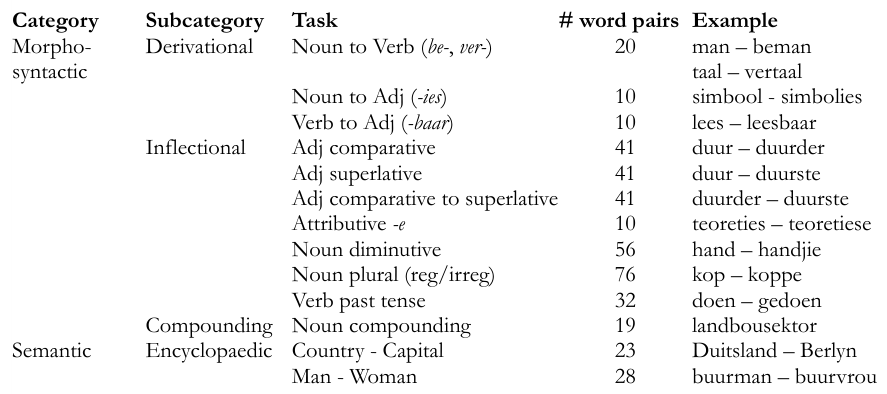
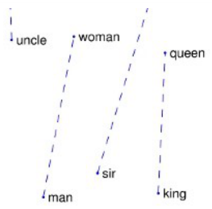
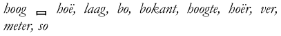

RAIL 2022Tafsiri ya mashine
Kuchunguza upachikaji wa maneno wa Kiafrikana kwa kutumia mlinganisho na majirani wa karibu
Tafsiri ya mashine, haijakaguliwa na binadamu. Makala asili ndiyo toleo la rejeo; sentensi zilizopigiwa mstari ni zile ambazo ukaguzi wa kiotomatiki haukuwa na uhakika nazo.
Proceedings of the 3rd Workshop on Resources for African Indigenous Languages (RAIL 2022), Journal of the Digital Humanities Association of Southern Africa.
Tafsiri ya Ernst van Gassen (Arktos AI Lab), yenye leseni CC BY-SA 4.0 kama makala asili. Matumizi tena yanaruhusiwa kwa kutaja mwandishi; shiriki marekebisho kwa masharti yale yale. Waandishi asili hawajakagua wala kuidhinisha tafsiri hii.
Maandishi matupu ya kutumia tena, pamoja na leseni yake: Kiswahili · LESENI
Taasisi
Gaustad, Tanja
Eiselen, Roald
Centre for Text Technology (CTexT), North-West
University, South Africa
Anwani za barua pepe zimeondolewa kwa sababu za faragha. Zinapatikana katika PDF asilia.
Muhtasari
Karatasi hii inawasilisha uchunguzi wa upachikaji wa maneno kwa Kiafrikana kwa kutumia mbinu za mlinganisho na majirani wa karibu. Tunalinganisha matokeo kwenye aina tatu za upachikaji (fastText, FLAIR na GloVe) kwenye seti mpya ya data ya mlinganisho kwa Kiafrikana, iliyochochewa na Bigger Analogy Test Set: BATS (Gladkova et al. 2016). Uchambuzi wetu unaonyesha kwamba kwa Kiafrikana, sawa na Kiingereza, aina za upachikaji huathiri ubora wa mlinganisho unaopatikana kwa kazi tofauti za kiisimu. Uchunguzi wetu pia unaonyesha, hata hivyo, kwamba upachikaji huu wa Kiafrikana hausimbi uwakilishi wa kiisimu ulio wazi kama ule wa upachikaji wa Kiingereza. Sababu kamili ya hili ni mada ya kazi ya baadaye, lakini ongezeko la uchangamano wa kimofolojia na ukosefu wa data kwa uwezekano mkubwa vina mchango.
Maneno Muhimu
Upachikaji wa maandishi, Kiafrikana, Mlinganisho, Tathmini, Lugha zenye rasilimali chache
1 Utangulizi na usuli
Katika muongo uliopita kumekuwa na mabadiliko ya kimsingi katika uwanja wa uchakataji wa lugha asilia (NLP) pamoja na kupitishwa kwa upana kwa mitandao ya neva ya kina (DNNs), na kusababisha maendeleo makubwa katika uwanja mzima. Kinachotegemeza mabadiliko haya ni kuanzishwa kwa mbinu za kisasa zaidi za kuwakilisha data ya lugha katika umbo la namba, hasa uwakilishi wa thamani halisi ulio na vekta unaojulikana kama upachikaji wa maneno. Uwakilishi huu ni sharti la awali la kutumia mbinu za Ujifunzajikina kwa teknolojia mbalimbali za NLP. Wakati huo huo upachikaji huu umeondoa sehemu kubwa ya isimu iliyokuwa sehemu ya mzunguko wa maendeleo wa NLP (hata kwa mbinu za jadi za ujifunzaji wa mashine) na kusababisha jitihada ambayo sasa inaendeshwa karibu kabisa na uhandisi na hali ya kisasa zaidi.
Moja ya sifa za uwakilishi huu tata zaidi ni kwamba hakuna uhusiano wa wazi unaoweza kufasiriwa na binadamu kati ya uwakilishi wenye vekta na maarifa yaliyopo ya kiisimu. Hii nayo inafanya vipengele vya ujifunzaji wa mashine, ambavyo tayari ni tata sana na vigumu kufasiriwa, kuwa karibu haiwezekani kueleweka kikamilifu. Hata hivyo, watengenezaji wametoa madai mapana kuhusu taarifa za kiisimu zinazowakilishwa katika upachikaji huu katika viwango vya kimofolojia, kisintaksia, na semantiki (Mikolov et al. 2013a, Pennington et al. 2014). Ili kuunga mkono madai haya, majaribio tofauti yameundwa kwa lengo la kueleza kwa njia isiyo ya moja kwa moja taarifa iliyomo katika uwakilishi wa vekta, hasa kwa Kiingereza. Hivi karibuni zaidi, kumekuwa pia na uchunguzi wenye mwelekeo zaidi wa kiisimu kujaribu kupata uelewa bora wa taarifa zilizosimbwa katika upachikaji huu na kama kuna uhusiano na dhana na maarifa yaliyopo ya kiisimu (Allen & Hospedales 2019, Miaschi & Dell'Orletta 2020, Warstadt et al. 2019).
Kwa Kiafrikana, kumekuwa na idadi ndogo ya uchunguzi kuhusu matumizi ya Ujifunzajikina na upachikaji wa maneno (Hanslo 2021, Heyns & Barnard 2020, Loubser & Puttkammer 2020, Ralethe 2020, Van Heerden & Bas 2021), mengi yakilenga matumizi ya Ujifunzajikina kwa kazi mbalimbali za NLP. Hadi hivi karibuni kulikuwa na mifano mitatu tu ya upachikaji wa maneno ya Kiafrikana inayopatikana kwa uhuru (Conneau et al. 2020, Grave et al. 2018), yote bila tathmini yoyote ya moja kwa moja ya ubora wake. Hivi karibuni zaidi, Eiselen (2022) alitoa mifano mitano mipya ya upachikaji kwa Kiafrikana (inayopatikana kwa uhuru kutoka [1]), iliyofunzwa kwenye seti kubwa zaidi ya data iliyoratibiwa, ambayo mitatu kati yake itatumika katika utafiti huu.
Kwa ufahamu wetu hakuna uchunguzi wa kina kuhusu asili ya upachikaji wa maneno katika lugha ya Kiafrikana, na iwapo vipimo na madai yaliyofanywa kwa upachikaji wa maneno katika lugha ya Kiingereza yanafaa kwa lugha kama vile Kiafrikana, ambayo kimofolojia ni ngumu zaidi katika suala la utokanaji na ubadilishaji, lakini pia ni yenye tija sana katika suala la kuchanganya maneno, kinyume na Kiingereza. Kiafrikana pia kina data chache sana zinazopatikana ili kufundisha mifano hii ya upachikaji.
Kwa kuzingatia usuli huu, utafiti wetu unalenga uchunguzi wa kiudadisi wa upachikaji wa maneno wa Kiafrikana kwa usanifu tatu tofauti (GloVe, fastText, na FLAIR), kwa kutumia mbinu zilizopo za tathmini kujibu maswali yafuatayo:
- Je, mifano tofauti ya upachikaji inasimba aina tofauti za taarifa kwa lugha zenye uchangamano zaidi wa kimofolojia na zenye rasilimali chache, kama vile Kiafrikana?
- Je, mbinu za tathmini ya ndani kwa Kiingereza zinatumika kwa lugha zenye mofolojia changamano zaidi, kama vile Kiafrikana?
Sehemu ifuatayo inatoa muhtasari mfupi wa upachikaji wa maneno, usanifu tatu unaozingatiwa na data ya mafunzo iliyotumika. Sehemu ya 3 inatoa muhtasari wa mbinu za uchambuzi wa upachikaji wa maneno na muundo wa majaribio kwa Kiafrikana, ikifuatiwa na uchambuzi wa matokeo ya majaribio tofauti katika Sehemu ya 4. Tunahitimisha uchunguzi katika Sehemu ya 5 kwa majadiliano zaidi ya matokeo yetu na maeneo ya kazi inayowezekana ya baadaye.
2 Usanifu wa upachikaji na taratibu za mafunzo
Kupata uwakilishi wa namba wenye maana kwa maandishi, na hasa maneno, kuna historia ndefu katika NLP (Pennington et al. 2014). Hii ni kweli hasa katika muktadha wa ujifunzaji wa mashine ambapo uwakilishi huu ni hitaji kwa mifano ili kufunzwa. Ingawa kazi ya kujifunza aina hizi za uwakilishi imekuwa ikiendelea tangu Bengio et al. (2003), mbinu kuu ya kuwakilisha maneno katika mifano ya ujifunzaji wa mashine ilikuwa ile inayoitwa vekta moja moto, ambapo kila neno katika msamiati linawakilishwa na vekta chache iliyo na sufuri kwa nafasi zote isipokuwa ile ya neno husika, ambayo inawekwa kuwa 1. Njia hii ilikuwa inaweza kutumika, lakini ilijumuisha tu taarifa kuhusu kama neno ni mwanachama wa msamiati au la. Hii ilibadilika mwaka 2013 kwa kuanzishwa kwa word2vec (Mikolov et al. 2013a, Mikolov et al. 2013b, Mikolov et al. 2013c), ambapo vekta zenye thamani halisi hujifunzwa kwa mchanganyiko wa matukio-shirikishi ya kiwango cha sentensi na kiainishi cha log-linear ili kuzalisha vekta ya pato yenye urefu uliofafanuliwa awali. Hii ilifuatiwa muda mfupi baadaye na mbinu nyingine ya upachikaji, Global Vectors (GloVe) (Pennington et al. 2014). Njia zote mbili ziliruhusu mafunzo kwenye kiasi kikubwa cha data kwa ufanisi na uwakilishi wa vekta uliojifunza ulisababisha uboreshaji katika teknolojia nyingi za NLP zinazofuata wakati zikiunganishwa na mbinu mbalimbali za kujifunza kina.
Moja ya mapungufu makubwa ya mifano hii ya upachikaji ya "classic" ni kwamba kila neno lina upachikaji mmoja, bila kujali muktadha ambamo neno hilo linatokea. Hili limeshughulikiwa na mifano ya hivi karibuni zaidi ya upachikaji na lugha ambayo hutumia usanifu tofauti wa DNN, kama vile mitandao ya neva ya kikonvolisheni, ya kirejeshi, na Transformer. Mifano hii hujifunza modeli ya kuzalisha pato la vekta, ambayo inaweza kurekebisha uwakilishi wa vekta kwa neno kwa kuzingatia muktadha ambamo neno hilo linatokea. Hii imeruhusu zaidi mafanikio makubwa katika kazi za chini za NLP, kwa gharama ya angalau kipengele kimoja muhimu sana, yaani uwezo wa kuelezeka.
Tangu mwanzo wa kutengeneza upachikaji, ilikuwa wazi kwamba ingawa uwakilishi wa vekta ulihusiana na sifa kadhaa za semantiki na mofo-sintaksia za Kiingereza, ilikuwa vigumu kubainisha kile ambacho modeli inajifunza. Asili ya upachikaji - vekta kubwa za nambari halisi - na taratibu zake za mafunzo huficha maana ya thamani fulani katika nafasi fulani ya vekta na jinsi thamani hizo zinavyohusiana na sifa za kiisimu. Hii imekuwa mbaya zaidi kwa matumizi ya DNN kuzalisha uwakilishi, kwa kuwa kuna vigezo vingi sana katika mchakato huo, hivi kwamba inakuwa karibu haiwezekani kubainisha ikiwa kuna sifa maalum za kiisimu zinazohusishwa na nafasi au maeneo maalum ya vekta. Ijapokuwa kumekuwa na juhudi kadhaa za kupendekeza mbinu za kuchunguza upachikaji, bado hakuna mbinu iliyo wazi ya kuchunguza ubora wa upachikaji na kueleza thamani zinazohusishwa na modeli. Zaidi ya hayo, tafiti nyingi hizi zimelenga Kiingereza pekee, na kazi ndogo imefanywa kubainisha jinsi uwakilishi unavyofanya kazi katika mazingira tofauti kiisimu na/au yenye rasilimali chache. Kwa utafiti huu tunazingatia usanifu tatu wa upachikaji, upachikaji mbili za kawaida zaidi za kiklasiki, na mtandao mmoja wa neva wa kurudiwa, yaani upachikaji wa fastText, GloVe, na FLAIR.
fastText (Bojanowski et al. 2017) ni upanuzi wa word2vec asili (Mikolov et al. 2013a) unaojumuisha n-gramu za herufi katika hesabu za upachikaji ili kuhakikisha kwamba maneno ambayo hayajaonekana hapo awali pia yanazalisha upachikaji. Upachikaji wa GloVe (Pennington et al. 2014) unatofautiana kidogo na fastText kwa kuwa unatumia utokeaji pamoja wa jumla wa maneno kufunza modeli ya urejeshaji wa log-bilinear kwa ajili ya kuzalisha upachikaji, na unazingatia maneno pekee. Miundo yote miwili hii inazalisha upachikaji mmoja kwa neno, bila kujali muktadha wa neno hilo. Upachikaji wa FLAIR kwa upande mwingine hufunza mtandao wa neva wa kumbukumbu ya muda mfupi-mrefu unaojirudia ili kuzalisha uwakilishi kulingana na mfuatano wa herufi. Hii ina faida mbili: i) neno lilelile katika miktadha tofauti linaweza kuwa na uwakilishi tofauti unaoakisi muktadha; na ii) kwa sababu modeli huchukulia herufi, na si maneno, kama vipashio vya msingi, mfuatano wowote wa herufi utapata upachikaji, bila kujali kama umeonekana wakati wa mafunzo. Sifa hii ya mwisho ni muhimu hasa katika mazingira yenye rasilimali chache ambapo uhaba wa data bado ni tatizo kubwa. fastText na FLAIR kila moja ina matoleo mawili, lakini kutokana na vikwazo vya nafasi tutazingatia tu miundo ya mfuko wa maneno endelevu ya fastText (CBoW) na ya nyuma ya FLAIR katika uchambuzi wetu.
Sharti la msingi la kufunza aina yoyote ya upachikaji ni mkusanyiko mkubwa wa data za maandishi, kwa kawaida katika mpangilio wa mabilioni ya maneno. Kwa bahati mbaya, hakuna ukusanyaji wa data mkubwa kama huo uliopo kwa Kiafrikana. Kwa madhumuni ya utafiti huu, tulitumia mchanganyiko wa data zinazopatikana kwa uhuru, zikiwemo NCHLT Afrikaans Text Corpora (Eiselen & Puttkammer 2014), data ya maandishi ya lugha moja ya Kiafrikana ya Autshumato (Snyman et al. 2013), na Wikipedia [2], pamoja na seti za data za ndani zenye ufikiaji wenye vikwazo kutokana na hakimiliki. Kwa jumla, modeli zilifunzwa kwa takriban maneno milioni 250, ambayo ni data ndogo sana kuliko ile inayotumiwa kwa kawaida katika kujifunza upachikaji kwa lugha nyingi zenye rasilimali nyingi duniani.
Kwa kuwa utafiti wa sasa unavutiwa hasa na kuchunguza sifa za uwakilishi wa vekta, mipangilio chaguomsingi ilitumika kufunza kila moja ya upachikaji.
3 Mbinu za uchambuzi wa upachikaji wa maneno: Muundo wa majaribio kwa Kiafrikana
Kama ilivyotajwa hapo juu, tathmini ya ndani kabisa ya upachikaji wa maneno bado haipatikani kwa urahisi kwa sababu vekta zina idadi kubwa ya thamani za nambari ambazo hazilingani wazi na sifa maalum za kiisimu na kwa hiyo si rahisi kufasiriwa na binadamu. Upachikaji wa maneno kwa kawaida hutathminiwa unapotumiwa kama ingizo kwa mfumo mkubwa zaidi ambao kisha unaonyesha utendaji ulioboreshwa. Kwa aina hii ya tathmini ya nje ni vigumu, hata hivyo, kutathmini mchango wa upachikaji kwa utendaji wa jumla ikilinganishwa na kwa mfano usanifu wa mfumo (Schnabel et al. 2015). Sasa tutajadili jinsi tulivyotumia mbinu zilizopo za uchanganuzi kutathmini na kuchunguza upachikaji wa Kiafrikana.
3.1 Analogi
Kumekuwa na majaribio mbalimbali ya kuchunguza jinsi upachikaji wa maneno tofauti unavyohusiana na kuonyesha kwamba unawakilisha baadhi ya sifa za kiisimu (aina fulani) (Allen & Hospedales 2019, Miaschi & Dell'Orletta 2020, Tulkens et al. 2016, Warstadt et al. 2019). Mojawapo ya mbinu hizo ni kutumia data inayotegemea mlinganisho ili kupima utambuzi wa mahusiano ya kiisimu kwa kutumia upachikaji wa maneno (Mikolov et al. 2013a, Turney 2012). Mlinganisho uliotajwa zaidi bila shaka ni "Neno lipi liko kwa mfalme kama mwanamke alivyo kwa mwanamume?" likiwa na jibu linalotarajiwa "malkia".
Mikolov et al. (2013a) walianzisha seti ya majaribio ya mlinganisho ya Google kwa Kiingereza ambayo ina kategoria tisa za kimofosintaksia na tano za semantiki. Kazi za semantiki zote ni za kienciklopedia ilhali kategoria za kimofosintaksia zinajumuisha kazi mbili za mofolojia ya kiunzi, sita za mofolojia ya kinyambuliko na kazi moja ya kienciklopedia, kila moja ikiwa na kati ya jozi 20 na 70 za maneno ya kipekee. Kama ilivyobainishwa na Gladkova et al. (2016), kuna masuala mawili na seti za majaribio zilizopo: kwanza, nyingi kati yake hazijasawazishwa kwa aina tofauti za mahusiano ya kiisimu na pili, matokeo kwa kawaida huripotiwa kama wastani wa seti nzima ya majaribio na si kwa kila aina ya uhusiano. Ili kurekebisha upungufu wa kwanza, walianzisha Seti Kubwa ya Majaribio ya Mlinganisho (BATS) inayoshughulikia aina kuu nne za mahusiano ya kiisimu: mofolojia ya kinyambuliko na ya kiunzi pamoja na semantiki za kileksikografia na kienciklopedia. Kila aina kuu kwa upande wake ina mahusiano 10 tofauti yenye jozi 50 za maneno za kipekee kila moja.
Hadi sasa, kumekuwa na uchunguzi mdogo wa upachikaji kwa Lugha za Afrika Kusini (Dlamini et al. 2021), na hakuna seti za majaribio za mlinganisho kama hizo zilizopo kwa Kiafrikana hasa. Kwa uchunguzi huu wa awali wa upachikaji wa maneno wa Kiafrikana, BATS ilitumika kama msukumo wa kuunda seti ndogo ya mlinganisho. Hatukujumuisha kazi zozote za semantiki za kileksikografia katika hatua hii lakini tuliamua kulenga mofolojia ya unyambulishaji na uyambishaji pamoja na kazi mbili za semantiki za kienciklopedia kwa kulinganisha na Kiingereza.
Hatua ya kwanza ilikuwa uchambuzi makini wa kategoria zilizotumika: kwa kuwa zimeegemezwa kwenye Kiingereza, si zote zinazoweza kutumika kwa lugha tofauti. Kwa mfano, mojawapo ya kazi za mofolojia ya unyambulishaji katika BATS, uundaji wa wingi wa kitenzi, haupo katika Kiafrikana. Zaidi ya hayo, kwa kategoria zinazoweza kutumika, tafsiri rahisi kwa kawaida si chaguo linalowezekana kutokana na tofauti za matumizi, marudio, na uundaji wa maneno katika Kiafrikana. Kwa kila kategoria iliyoshughulikiwa katika utafiti wetu, tulijaribu kupata sampuli wakilishi ya vipengele vingi vya kategoria hiyo iwezekanavyo. Kwa nomino za wingi kwa mfano, idadi kubwa ya aina tofauti za wingi wa kawaida na usio wa kawaida zinazopatikana katika vitabu vya kiada na sarufi zilijumuishwa. Vivyo hivyo kwa vivumishi vya ulinganishi na vya kupitiliza. Kipengele kimoja cha kiisimu ambacho kimekuwa na uchunguzi mdogo katika aina hii ya upimaji, lakini kimeenea sana katika Kiafrikana, ni uundaji wa maneno ambatani. Kwa hiyo, seti ndogo sana ya maneno ambatani ya nomino ilijumuishwa ili kubaini jinsi yanavyowakilishwa katika upachikaji.
Seti yetu ya majaribio kwa Kiafrikana inajumuisha kazi mbili za semantiki, zote za kiensaiklopidia, na kazi 11 za kimofosintaksia, tatu za kiunzi, saba za kinyambuliko pamoja na uundaji wa maneno ambatani. Kwa jumla, kuna "maswali" 16,313 ya mlinganisho. Jedwali la 1 linaonyesha muhtasari wa kategoria zilizochaguliwa, ikijumuisha ni jozi ngapi za maneno kwa kila kazi na mfano kwa kila moja.
Majibu ya maswali ya mlinganisho hukokotolewa kwa kuchukua uwakilishi wa vekta wa neno la 1 (Vw1), kutoa vekta ya neno la 2 (Vw2), linalohusiana kisemantiki au kimofosintaksia, kisha kuongeza vekta ya neno la tatu (Vw3). Vekta inayotokana (Vresult) kisha inalinganishwa na vekta za maneno yote katika modeli ili kupata vekta yenye (zenye) umbali mdogo zaidi wa Euclidean. Matarajio ni kwamba vekta iliyo karibu zaidi na vekta ya matokeo itaonyesha uhusiano uleule kwa W3 kama uhusiano kati ya W1 na W2. Mfano wa kielelezo, Vking - Vman + Vwoman unapaswa kutoa vekta ambayo ina umbali mdogo zaidi kwa Vqueen. Vivyo hivyo, Vstronger - Vstrong + Vclear inapaswa kutoa vekta iliyo karibu zaidi na Vclearer. Taswira ya vekta katika Kielelezo 1 inatoa dhana ya kwa nini hii inapaswa kufanya kazi. Mipambanuko kati ya man na woman, na king na queen, ingawa si sawa kabisa, inafanana. Kwa hiyo, kuondoa sifa za man kutoka kwa king, na kuongeza sifa za woman, kunapaswa kutoa vekta iliyo karibu na queen.
Jedwali 1: Seti ya data ya mlinganisho kwa Kiafrikana: Aina za mahusiano ya kiisimu, idadi ya jozi za maneno za kipekee na mifano.

3.2 Majirani wa karibu
Njia ya pili iliyoelezwa na Collobert & Weston (2008) na pia kurejelewa na Mikolov et al. (2013a) ni uchanganuzi wa majirani wa karibu kwa seti maalum ya maneno. Jirani wa karibu wa neno huamuliwa tena kwa kutafuta vekta za maneno ambazo zina umbali mdogo zaidi wa Euclidean kati ya vekta ya swali na vekta za maneno mengine yoyote ambayo upachikaji wake upo katika modeli. Dhana ni kwamba mapitio ya kimaelezo ya majirani hutoa ufahamu wa ziada kuhusu aina za mahusiano ambayo upachikaji unajifunza. Kama mfano, upachikaji wa Kiingereza wa fastText kwa neno "run" unajumuisha "runs, running, ran" ambayo inaonyesha usimbaji wa baadhi ya sifa za kimofolojia-sintaksia. Ingawa haiwezekani kuunda kipimo kimoja kwa madhumuni ya tathmini, ni utaratibu muhimu wa kupata uelewa wa taarifa za msingi ambazo zimesimbwa katika upachikaji, kama vile uhyperimia, uhiponimia, usinonimia, au mahusiano ya kimofolojia-sintaksia.
Moja ya tahadhari za kukumbuka katika uchanganuzi wa jirani wa karibu ni kwamba aina tofauti za mahusiano zinaweza kupatikana ndani ya usanifu mmoja wa upachikaji, na huenda isiwe wazi mara moja ni taarifa gani zimesimbwa katika upachikaji. Mifumo thabiti inaweza kupatikana lakini inapaswa kutumika tu kufikia hitimisho pana na la jumla kuhusu taarifa zilizosimbwa.

Kielelezo 1: Uwakilishi wa vekta unaohusiana na jinsia (kutoka Pennington et al. (2014))
Ili kuchunguza taarifa zilizosimbwa katika usanifu tofauti wa upachikaji kwa Kiafrikana, tulichagua maneno mawili kutoka kila kategoria iliyoorodheshwa katika Jedwali 1, jumla ya 26, na tukazalisha majirani watano wa karibu kwa kila neno katika kila usanifu tofauti. Haya yalikaguliwa kwa mikono ili kubaini ubora na asili ya upachikaji.
3.3 Tathmini ya kazi za mkondo wa chini
Njia ya kawaida zaidi ya kuthibitisha ubora wa upachikaji wa maneno ni matumizi yake kama sehemu ya kazi ya mkondo wa chini, kama vile uwekaji tagi wa POS, utambuzi wa huluki zilizotajwa au kujibu maswali. Matumizi ya upachikaji badala ya usimbaji moto mmoja yalikuwa moja ya hatua za kwanza kuwezesha mwelekeo wa sasa wa Ujifunzajikina katika NLP, na imeonyeshwa mara kwa mara kuwa kutumia upachikaji katika kazi za mkondo wa chini huboresha ubora wa teknolojia. Hii pia imeonyeshwa kuwa kesi kwa Kiafrikana ambapo mchanganyiko wa upachikaji wa FLAIR unaboresha matokeo ya uwekaji tagi wa POS na NER juu ya mifano ya awali (Eiselen 2022). Kutokana na vikwazo vya nafasi hatujumuishi matokeo haya katika uchambuzi wa sasa.
4 Kuchanganua upachikaji wa maneno wa Kiafrikana: Matokeo
Mojawapo ya motisha zetu za awali za utafiti huu ilikuwa kuchunguza ikiwa aina ya taarifa iliyosimbwa katika miundo tofauti ya upachikaji inafanana kwa lugha tofauti za kiisimu na ikiwa mbinu zinazotumiwa kutathmini upachikaji wa Kiingereza pia zinatumika kwa lugha zenye mofolojia changamano zaidi. Kwanza tutawasilisha matokeo ya kazi ya mlinganisho kwa kila kazi ndogo ya kiisimu, ikijumuisha mjadala wa kina wa uchunguzi wetu. Tathmini hii ya ndani ya kiasi ya upachikaji wa maneno kwa Kiafrikana inafuatwa na uchanganuzi wa ndani wa kimaelezo unaochunguza majirani wa karibu kama ilivyoelezwa katika sehemu ya 3.2.
4.1 Milinganisho: Tathmini ya kiasi
Kwa kutumia seti ya data ya mlinganisho kwa Kiafrikana iliyoelezwa awali, Usahihi kwa kila aina ya kazi unahesabiwa kando. Tafiti za awali mara nyingi huripoti tu Usahihi wa neno lenye umbali mdogo zaidi wa Euclidean. Tathmini yetu, hata hivyo, inajumuisha alama mbili za Usahihi: moja kwa mechi kutoka kwa neno la karibu zaidi (nafasi ya 1) na moja kwa mechi kutoka kwa maneno katika nafasi nne zinazofuata (nafasi ya 2-5). Kujumuisha zaidi ya ulinganifu wa karibu zaidi kunatupa ufahamu zaidi kuhusu uwakilishi tofauti wa upachikaji kwa kazi mbalimbali za mlinganisho. Zaidi ya hayo, wakati wa kuhesabu usahihi, maneno yote ya maswali ya ingizo yaliondolewa kutoka kwa matokeo. Kuacha marekebisho haya kulisababisha matokeo mabaya zaidi (athari iliyobainishwa pia katika Linzen (2016)). Jedwali la 2 linaonyesha matokeo kwa kategoria tofauti za kiisimu (zilizojumlishwa katika kiwango cha kategoria ndogo) na aina za upachikaji.
Katika majaribio yetu kwa Kiafrikana, kazi na aina ya upachikaji iliyofanya vizuri zaidi kwa ujumla ni GloVe kwenye kazi za semantiki kwa Usahihi wa 51,11%, ilhali matokeo mabaya zaidi pia yanapatikana kwa GloVe, lakini kwenye kazi za mofolojia ya kiambishi (1,11%). Ikilinganishwa na matokeo ya Kiingereza kwenye seti ya data ya Google (yakianzia karibu 60% (Mikolov et al. 2013a) hadi 60% ya juu (Levy & Goldberg 2014)), inashangaza jinsi aina zote za upachikaji zinavyofanya vibaya kwenye kazi zote kwa Kiafrikana. Tukilinganisha matokeo yetu ya GloVe na yale ya Gladkova et al. matokeo ya kina zaidi ya (2016) kuhusu BATS, utendaji kwa Kiafrikana tena uko chini kidogo.
Tukizingatia aina ya kazi, kwa kazi za kiunzi FLAIR hufanya vizuri zaidi na GloVe vibaya zaidi. Upachikaji wa GloVe na fastText una asilimia kubwa sana ya maneno ambayo hayakupatikana katika kumi bora (87% na 68% mtawalia) jambo linaloelezea utendaji wao duni. Sababu inayowezekana ya utendaji duni kwenye viunzi ni ukweli kwamba kwa ufafanuzi maneno yaliyooanishwa ni ya kategoria tofauti za kisintaksia na kwa kawaida hayatokei katika nafasi zinazofanana, hivyo hayana utokeaji-shirikishi unaofanana na neno la hoja na kwa hiyo yatakuwa na uwakilishi wa vekta tofauti kabisa.
Kwa mofolojia ya unyambulishaji, fastText ina asilimia kubwa zaidi ya mlinganisho sahihi kwa nafasi ya kwanza, huku GloVe ikiwa na ya chini zaidi, ingawa tofauti katika Usahihi ni ndogo ikilinganishwa na kazi nyingine. Kinachovutia ni kwamba, kuna tofauti kubwa katika maneno sahihi yanayopatikana katika nafasi 2-5: FLAIR hupata mlinganisho unaotafutwa katika zaidi ya 40% ya visa, ilhali aina nyingine za upachikaji hupata tu katika zaidi kidogo ya 20%. Upachikaji wa FLAIR pia hupata mlinganisho mingi zaidi ilhali GloVe hupata michache zaidi. Hili linaweza kuelezewa na ukweli kwamba upachikaji wa FLAIR husimba mfuatano wa herufi na kwa kawaida mofolojia ya unyambulishaji hutokea katika kiwango cha herufi. Kuhusiana na kazi ndogo za unyambulishaji, maumbo ya wingi na ya udogo ni magumu zaidi kutambua.
Matokeo ya mlinganisho wa maneno ambatani yanaonyesha kuwa upachikaji wa maneno haujifunzi uwakilishi wa viambajengo vya neno ambatani. Kufanya jaribio la mlinganisho linalotenga kichwa cha neno ambatani husababisha uwakilishi ulio katika nafasi ya vekta isiyohusiana kabisa, bila uwiano wowote na neno ambatani au kichwa chake. Ijapokuwa maneno ambatani ni ya kawaida kidogo kuliko kichwa cha neno ambatani kwa ujumla, hii haionekani kuwa sababu kuu inayochangia utendaji duni. Kama inavyojadiliwa katika sehemu inayofuata, majirani wa karibu wa kichwa wana maneno ambatani mengi, hata maneno ambatani yenye marudio ya chini kiasi, ikionyesha kuwa neno ambatani kamili linaonekana kama sawa na kichwa, lakini si lazima katika kiwango cha kiambajengo. Kipengele hiki cha upachikaji hakijachunguzwa kwa kina na kitahitaji uchunguzi zaidi katika siku zijazo.
Jedwali la 2: Usahihi kwa seti ya majaribio ya mlinganisho ya Kiafrikana kwenye kazi tofauti za kiisimu (zilizounganishwa katika kiwango cha kategoria ndogo) kwa aina tatu za upachikaji wa maneno (utendaji bora katika nafasi ya 1 kwa kila aina ya kazi kwa herufi nzito).

Matokeo ya kazi za mlinganisho wa semantiki ni kinyume cha zile za mofosintaksia (bila kujumuisha uambishaji): GloVe inazidi kwa uwazi sana aina nyingine zote za upachikaji kwenye vipimo vyote. Hapa, upachikaji wa FLAIR unafanya vibaya zaidi, pia kwa misingi yote. Tahadhari moja kwa matokeo haya ni kwamba upachikaji wa FLAIR kwa asili ni wa kimuktadha, na uwakilishi tofauti wa vekta utazalishwa wakati wa kuzingatia maneno katika miktadha ya sentensi, jambo ambalo halikuwa hivyo katika majaribio yetu. Inawezekana kabisa kwamba upachikaji wa FLAIR unafanya vizuri zaidi kwenye kazi za mlinganisho wa semantiki ikiwa vekta zinazalishwa kwa maneno katika muktadha wa sentensi. Kwa bahati mbaya, kwa sasa hakuna mbinu iliyobainishwa vizuri ya kuzalisha upachikaji kwa aina hii ya kazi na ni jambo ambalo litahitaji kuzingatiwa katika kazi ya baadaye, hasa ikiwa aina hii ya uchambuzi itafanywa kwa aina nyingine za uwakilishi, kama vile mifano ya Transformer.
Kwa muhtasari, matokeo yetu yanathibitisha matokeo ya awali kuhusu Kiingereza kwamba aina tofauti za upachikaji zinafanya vizuri zaidi kwa kazi tofauti za mlinganisho wa kiisimu. Aidha, matokeo yetu kwenye seti hii ya majaribio ya mlinganisho yanaonyesha kwamba mofolojia ya unyambulishaji ni rahisi kuigwa kuliko mofolojia ya uundaji, ilhali utungaji wa maneno, sifa ya kawaida ya Kiafrikana, ni vigumu sana kuigwa. Kwa ujumla, utendaji kwenye Kiafrikana, lugha yenye mofolojia changamano zaidi na yenye uzalishaji zaidi, ni duni kuliko ilivyotarajiwa.
4.2 Majirani wa karibu zaidi: Tathmini ya kimaelezo
Baada ya uchambuzi wa kiasi zaidi kwa kutumia mlinganisho, sasa tunachunguza majirani wa karibu zaidi kwa Kiafrikana, ikiwa wanatofautiana na matarajio yetu, na nini tunaweza kujifunza kutokana na uchunguzi huu.
upachikaji wa fastText
Matokeo makuu kwa upachikaji wa fastText ni kwamba kuna mifano michache sana au hakuna kabisa ya mahusiano ya semantiki katika majirani kwa maneno yoyote yaliyochaguliwa, na katika takriban visa vyote swali ni tungo ndogo ndani ya seti ya majirani wa karibu zaidi, tazama k.m. kwa verdeel (gawanya) na Berlyn (Berlin):


Hili linaweza kimsingi kuhusishwa na ukweli kwamba ujumuishaji wa taarifa za sehemu ndogo za maneno katika upachikaji una athari kubwa kwa uwakilishi wa vekta na unalingana na ukweli kwamba mofolojia ya Kiafrikana ina tija zaidi kuliko Kiingereza, katika vipengele vyote vya mifumo ya unyambulishaji na uundaji wa maneno. Matokeo ya hili ni kwamba umbo lolote la unyambulishaji au uundaji linaloonyesha aina fulani ya mabadiliko ya kichapaji, k.m. ufupishaji wa vokali mbili katika maumbo ya wingi, kwa kawaida halihusishwi na neno la swali na kwa hiyo halirudishwi kama jirani wa karibu zaidi. Zaidi ya hayo, kuwa Kiafrikana ni lugha ya utungaji wa maneno kunamaanisha kwamba idadi kubwa ya maneno yanayohusishwa kwa karibu na swali huwa ni ama unyambulishaji wa swali au tungo linalojumuisha swali, badala ya maneno yanayohusiana kisemantiki kama ilivyo mara nyingi katika Kiingereza.
upachikaji wa FLAIR
Kama ilivyoonyeshwa hapo awali katika Sehemu ya 4.1, na kama inavyotarajiwa kutokana na vigezo vya tathmini, kimsingi hakuna mahusiano ya semantiki kati ya maneno ya swali na majirani wa karibu zaidi kwa upachikaji wa FLAIR. Tofauti na upachikaji wa fastText, upachikaji wa FLAIR haujumuishi neno la swali kama tungo ndogo la majirani, lakini kuna uwiano mkubwa na mifumo ya unyambulishaji. Kama mfano, majirani wa karibu zaidi wa neno leesbaar (inayosomeka) ni kama ifuatavyo:

Kutoka kwa seti hii tunaona kwamba modeli aidha inakubaliana na kifungu kidogo cha 'lee' mwanzoni mwa neno au mofimu -baar (-able) mwishoni. Hii ni dalili kwamba modeli ina uwezekano mkubwa wa kuiga muundo wa viambishi.
Upachikaji wa GloVe
Upachikaji wa GloVe ni tofauti kwa kiasi kikubwa na aina nyingine, kukiwa na mchanganyiko wa mifano ya kimofosintaksia, semantiki, na utokeaji-pamoja ukionekana katika orodha ya majirani wa karibu zaidi, kwa mfano:


Katika mifano ya hoog (juu), kuna mnyambuliko - hoë (juu), hoogte (urefu), hoër (juu zaidi); maneno yanayohusiana kisemantiki - laag (chini), bo (juu), bokant (juu, kilele); pamoja na maneno ambayo mara nyingi hutokea pamoja na hoog - meter hoog (juu kwa mita), so hoog (juu sana). Utokeaji-pamoja huu si lazima uwe wa mara kwa mara zaidi kwani te (pia), is (ni) na baie (sana) zote hutokea mara nyingi zaidi pamoja na hoog kuliko meter (VivA 2022). Mchoro uleule pia hutokea kwa ironie (kejeli) huku aina zote tatu za mahusiano zikipatikana katika majirani wa karibu zaidi.
5 Majadiliano na kazi ya baadaye
Uchunguzi wetu wa upachikaji wa Kiafrikana umeonyesha kuwa, sawa na lugha nyingine, aina tofauti za upachikaji hufanya kazi vizuri zaidi kwa kazi tofauti za mlinganisho wa kiisimu. Hata hivyo, uchambuzi makini wa mlinganisho na matokeo ya majirani wa karibu pia unaonyesha kuwa upachikaji huu hausimbui uwakilishi wa kiisimu ulio wazi kama kwa Kiingereza. Kuna sababu mbili zinazowezekana za tofauti hizi: Kiafrikana ni tofauti kiisimu kwa kiwango muhimu au data zaidi inahitajika ili kufunza upachikaji wenye uwakilishi zaidi. Kwa sasa, hatujui chanzo kikuu cha mapungufu ya upachikaji wa Kiafrikana ni nini, lakini tunakisia kuwa kuna uwezekano mkubwa kwamba ugumu ulioongezeka wa kimofolojia na ukosefu wa data vina ushawishi.
Katika kesi ya utofauti/ugumu wa kiisimu, hii ingemaanisha kuwa kadiri lugha inavyokuwa tofauti zaidi ikilinganishwa na Kiingereza, k.m. lugha nyingine za Afrika Kusini kama vile isiZulu au Setswana, ndivyo upachikaji wa neno unavyopaswa kufunzwa kwa uangalifu zaidi na ndivyo unavyopaswa kutathminiwa kwa umakinifu zaidi. Ikiwa uchache wa data ndio chanzo (ingawa milioni 250 ni kiwango cha kati katika suala la rasilimali), hii haileti matumaini mazuri kwa lugha zenye uhaba wa rasilimali wakati wa kujenga na baadaye kutumia upachikaji kwa kazi za NLP na/au kujaribu kuelewa kile wanachowakilisha.
Kwa ujumla, kwa kuwa upachikaji kwa lugha zenye ugumu wa kimofolojia, na ambazo hutengeneza maneno kwa kuunganisha, ni tofauti kwa kiasi kikubwa na Kiingereza, jinsi ya kufunza upachikaji huu na vile vile jinsi tunavyouchambua inahitaji kufikiriwa upya, hasa kwa lugha zenye rasilimali chache.
Kazi ya baadaye inajumuisha kujenga seti kamili ya mlinganisho inayoshughulikia kategoria zaidi za kiisimu zinazohusiana na Kiafrikana. Kupanua uchunguzi huu kwa lugha nyingine za Afrika Kusini pia ni changamoto ya kuvutia, hasa kutokana na uzalishaji wao mkubwa wa kimofolojia sanjari na data ndogo sana.
Maelezo
- [1] https://repo.sadilar.org
- [2] https://dumps.wikimedia.org/
Shukrani
Kazi hii iliwezekana kwa msaada wa kifedha wa Kituo cha Kitaifa cha teknolojia ya lugha ya Binadamu, mpango wa Idara ya Michezo, Sanaa na Utamaduni ya Afrika Kusini.
Marejeo
Allen, C & Hospedales, T 2019, 'Analogies explained: Towards understanding word embeddings' , In: Proceedings of the 36th International Conference on Machine Learning, Long Beach, CA, PMLR, pp. 223-231.
Bengio, Y, Ducharme, R, Vincent, P & Jauvin, C 2003, 'A neural probabilistic language model' , Journal of Machine Learning Research, vol. 3, pp. 1137-1155.
Bojanowski, P, Grave, E, Joulin, A & Mikolov, T 2017, 'Enriching word vectors with subword information' , Transactions of the Association for Computational Linguistics, vol. 5, pp. 135-146.
Collobert, R & Weston, J 2008, 'A unified architecture for natural language processing: Deep neural networks with multitask learning' , In: Proceedings of the 25th International Conference on Machine learning, Valencia, Spain, pp. 160-167.
Conneau, A, Khandelwal, K, Goyal, N, Chaudhary, V, Wenzek, G, Guzmán, F, Grave, É, Ott, M, Zettlemoyer, L & Stoyanov, V 2020, 'Unsupervised Cross-lingual Representation Learning at Scale' , In: Proceedings of the 58th Annual Meeting of the Association for Computational Linguistics, Seattle, WA, ACL, pp. 8440-8451.
Dlamini, S, Jembere, E, Pillay, A & van Niekerk, B 2021, 'isiZulu Word Embeddings' , In: Proceedings of the 2021 Conference on Information Communications Technology and Society, Durban, South Africa, IEEE, pp. 121-126.
Eiselen, R 2022, 'Afrikaans Text Embeddings for Sequence Labelling with Deep Neural Networks' , In: Proceedings of the Southern African Conference for Artificial Intelligence Research 2022, Stellenbosch, South Africa, SACAIR.
Eiselen, R & Puttkammer, MJ 2014, 'Developing Text Resources for Ten South African Languages' , In: Proceedings of the 9th International Conference on Language Resources and Evaluation, Reykjavik, Iceland, ELRA, pp. 3698-3703.
Gladkova, A, Drozd, A & Matsuoka, S 2016, 'Analogy-based detection of morphological and semantic relations with word embeddings: what works and what doesn't' , In: Proceedings of the NAACL Student Research Workshop, San Diego, CA, ACL, pp. 8-15.
Grave, É, Bojanowski, P, Gupta, P, Joulin, A & Mikolov, T 2018, 'Learning Word Vectors for 157 Languages' , In: Proceedings of the 11th International Conference on Language Resources and Evaluation, Miyazaki, Japan, ELRA, pp 3483-3487.
Hanslo, R 2021, 'Evaluation of Neural Network Transformer Models for Named-Entity Recognition on Low-Resourced Languages' , In: Proceedings of the 16th Conference on Computer Science and Intelligence Systems (FedCSIS), Virtual, IEEE, pp. 115-119.
Heyns, N & Barnard, E 2020, 'Optimising word embeddings for recognised multilingual speech' , In: Proceedings of the Southern African Conference for Artificial Intelligence Research Conference 2020, Online, Virtual, SACAIR, pp. 102-116.
Levy, O & Goldberg, Y 2014, 'Linguistic Regularities in Sparse and Explicit Word Representations' , In: Proceedings of the 18th Conference on Computational Language Learning, Baltimore, MD, ACL, pp. 171-180.
Linzen, T 2016, 'Issues in evaluating semantic spaces using word analogies' , In: Proceedings of the 1st Workshop on Evaluating Vector Space Representations for NLP, Berlin, Germany, ACL, pp. 13-18.
Loubser, M & Puttkammer, MJ 2020, 'Viability of Neural Networks for Core Technologies for Resource-Scarce Languages' , Information, vol. 11, pp. 41-57.
Miaschi, A & Dell'Orletta, F 2020, 'Contextual and non-contextual word embeddings: an in-depth linguistic investigation' , In: Proceedings of the 5th Workshop on Representation Learning for NLP, Seattle, WA, ACL, pp. 110-119.
Mikolov, T, Chen, K, Corrado, G & Dean, J 2013a, 'Efficient estimation of word representations in vector space' , In: Proceedings of the International Conference on Learning Representations 2013, Scottsdale, AZ.
Mikolov, T, Sutskever, I, Chen, K, Corrado, GS & Dean, J 2013b, 'Distributed representations of words and phrases and their compositionality ' , Advances in Neural Information Processing Systems, vol. 26, pp. 3111-3119.
Mikolov, T, Yih, W & Zweig, G 2013c, 'Linguistic regularities in continuous space word representations' , In: Proceedings of the 2013 Conference of the North American Chapter of the Association for Computational Linguistics: Human Language Technologies, Atlanta, GA, ACL, pp. 746-751.
Pennington, J, Socher, R & Manning, CD 2014, 'Glove: Global vectors for word representation' , In: Proceedings of the 2014 Conference on Empirical Methods in Natural Language Processing (EMNLP), Doha, Qatar, ACL, pp. 1532-1543.
Puttkammer, MJ, Eiselen, R, Hocking, J & Koen, F 2018, 'NLP Web Services for Resource-Scarce Languages' , In: Proceedings of the 56th Annual Meeting of the Association for Computational Linguistics: System Demonstrations, Melbourne, Australia, ACL, pp. 43-49.
Ralethe, S 2020, 'Adaptation of deep bidirectional transformers for Afrikaans language' , In: Proceedings of the 12th Language Resources and Evaluation Conference, Marseille, France, ELRA, pp. 2475-2478.
Schnabel, T, Labutov, I, Mimno, D & Joachims, T 2015, 'Evaluation methods for unsupervised word embeddings' , In: Proceedings of the 2015 Conference on Empirical Methods in Natural Language Processing, Lisbon, Portugal, ACL, pp. 298-307.
Snyman, DP, McKellar, CA & Groenewald, H 2013, 'Autshumato English-Afrikaans Parallel Corpora' , Data set, v1.0, South African Centre for Digital Language Resources (SADiLaR), https://hdl.handle.net/20.500.12185/397.
Tulkens, S, Emmery, C & Daelemans, W 2016, 'Evaluating Unsupervised Dutch Word Embeddings as a Linguistic Resource' , In: Proceedings of the 10th International Conference on Language Resources and Evaluation, Portorož, Slovenia, ELRA, pp. 4130-4136
Turney, PD 2012, 'Domain and function: A dual-space model of semantic relations and compositions' , Journal of Artificial Intelligence Research, vol. 44, pp. 533-585.
Van Heerden, I & Bas, A 2021, 'AfriKI: Machine-in-the-Loop Afrikaans Poetry Generation' , In: Proceedings of the 1st Workshop on Bridging Human-Computer Interaction and Natural Language Processing, Virtual, ACL, pp. 74-80.
VivA 2022, 'Korpusportaal: Omvattend 1.11' , Virtuele Instituut vir Afrikaans (VivA), viewed 1 September 2022, <https://viva-afrikaans.org>.
Warstadt, A, Cao, Y, Grosu, I, Peng, W, Blix, H, Nie, Y, Alsop, A, Bordia, S, Liu, H & Parrish, A 2019, 'Investigating BERT's Knowledge of Language: Five Analysis Methods with NPIs' , In: Proceedings of the 2019 Conference on Empirical Methods in Natural Language Processing and the 9th International Joint Conference on Natural Language Processing, Hong Kong, China, ACL, pp. 2877-2887.
English na Kiswahili
Exploring Afrikaans word embeddings with analogies and nearest neighbours
Kuchunguza upachikaji wa maneno wa Kiafrikana kwa kutumia mlinganisho na majirani wa karibu
Affiliations
Gaustad, Tanja
Eiselen, Roald
Centre for Text Technology (CTexT), North-West
University, South Africa
Taasisi
Gaustad, Tanja
Eiselen, Roald
Centre for Text Technology (CTexT), North-West
University, South Africa
Abstract
Muhtasari
This paper presents an exploration of word embeddings for Afrikaans using the analogies and nearest neighbours methodologies. We compare the results on three types of embeddings (fastText, FLAIR and GloVe) on a novel analogy data set for Afrikaans, inspired by the Bigger Analogy Test Set: BATS (Gladkova et al. 2016). Our analysis shows that for Afrikaans, similar to English, the types of embeddings influence the quality of analogies found for different linguistic tasks. Our investigation also demonstrates, however, that these Afrikaans embeddings do not encode as clear a linguistic representation as with English embeddings. The exact reason for this is subject to future work, but the added morphological complexity and the lack of data most likely play a role.
Karatasi hii inawasilisha uchunguzi wa upachikaji wa maneno kwa Kiafrikana kwa kutumia mbinu za mlinganisho na majirani wa karibu. Tunalinganisha matokeo kwenye aina tatu za upachikaji (fastText, FLAIR na GloVe) kwenye seti mpya ya data ya mlinganisho kwa Kiafrikana, iliyochochewa na Bigger Analogy Test Set: BATS (Gladkova et al. 2016). Uchambuzi wetu unaonyesha kwamba kwa Kiafrikana, sawa na Kiingereza, aina za upachikaji huathiri ubora wa mlinganisho unaopatikana kwa kazi tofauti za kiisimu. Uchunguzi wetu pia unaonyesha, hata hivyo, kwamba upachikaji huu wa Kiafrikana hausimbi uwakilishi wa kiisimu ulio wazi kama ule wa upachikaji wa Kiingereza. Sababu kamili ya hili ni mada ya kazi ya baadaye, lakini ongezeko la uchangamano wa kimofolojia na ukosefu wa data kwa uwezekano mkubwa vina mchango.
Keywords
Maneno Muhimu
Text embeddings, Afrikaans, Analogy, Evaluation, Low-resource languages
Upachikaji wa maandishi, Kiafrikana, Mlinganisho, Tathmini, Lugha zenye rasilimali chache
1 Introduction and background
1 Utangulizi na usuli
Over the last decade there has been a fundamental shift in the field of natural language processing (NLP) with the broad adoption of deep neural networks (DNNs), leading to major advances across the field. Underpinning this shift has been the introduction of more sophisticated methods for representing language data in numerical form, specifically vectorised real value representations known as word embeddings. These representations are a prerequisite for applying deep learning techniques to various NLP technologies. At the same time these embeddings have removed a significant portion of the linguistics that formed part of the NLP development cycle (even with traditional machine learning techniques) and resulted in a now almost completely engineering and state-of-the-art driven pursuit.
Katika muongo uliopita kumekuwa na mabadiliko ya kimsingi katika uwanja wa uchakataji wa lugha asilia (NLP) pamoja na kupitishwa kwa upana kwa mitandao ya neva ya kina (DNNs), na kusababisha maendeleo makubwa katika uwanja mzima. Kinachotegemeza mabadiliko haya ni kuanzishwa kwa mbinu za kisasa zaidi za kuwakilisha data ya lugha katika umbo la namba, hasa uwakilishi wa thamani halisi ulio na vekta unaojulikana kama upachikaji wa maneno. Uwakilishi huu ni sharti la awali la kutumia mbinu za Ujifunzajikina kwa teknolojia mbalimbali za NLP. Wakati huo huo upachikaji huu umeondoa sehemu kubwa ya isimu iliyokuwa sehemu ya mzunguko wa maendeleo wa NLP (hata kwa mbinu za jadi za ujifunzaji wa mashine) na kusababisha jitihada ambayo sasa inaendeshwa karibu kabisa na uhandisi na hali ya kisasa zaidi.
One of the features of these more complex representations is that there is no clear human interpretable connection between the vectorised representations and existing linguistic knowledge. This in turn makes the machine learning components, which are already very complex and difficult to interpret, almost impossible to fully understand. Even so, developers have made broad claims about the linguistic information that is represented in these embeddings on both morphological, syntactic, and semantic levels (Mikolov et al. 2013a, Pennington et al. 2014). To support these claims, different tests have been designed with the aim of indirectly explaining the information that is contained in the vector representations, primarily for English. More recently, there have also been more linguistically motivated investigations to attempt to get a better understanding of the information encoded in these embeddings and whether there are correlations with existing linguistic concepts and knowledge (Allen & Hospedales 2019, Miaschi & Dell'Orletta 2020, Warstadt et al. 2019).
Moja ya sifa za uwakilishi huu tata zaidi ni kwamba hakuna uhusiano wa wazi unaoweza kufasiriwa na binadamu kati ya uwakilishi wenye vekta na maarifa yaliyopo ya kiisimu. Hii nayo inafanya vipengele vya ujifunzaji wa mashine, ambavyo tayari ni tata sana na vigumu kufasiriwa, kuwa karibu haiwezekani kueleweka kikamilifu. Hata hivyo, watengenezaji wametoa madai mapana kuhusu taarifa za kiisimu zinazowakilishwa katika upachikaji huu katika viwango vya kimofolojia, kisintaksia, na semantiki (Mikolov et al. 2013a, Pennington et al. 2014). Ili kuunga mkono madai haya, majaribio tofauti yameundwa kwa lengo la kueleza kwa njia isiyo ya moja kwa moja taarifa iliyomo katika uwakilishi wa vekta, hasa kwa Kiingereza. Hivi karibuni zaidi, kumekuwa pia na uchunguzi wenye mwelekeo zaidi wa kiisimu kujaribu kupata uelewa bora wa taarifa zilizosimbwa katika upachikaji huu na kama kuna uhusiano na dhana na maarifa yaliyopo ya kiisimu (Allen & Hospedales 2019, Miaschi & Dell'Orletta 2020, Warstadt et al. 2019).
For Afrikaans, there have been a limited number of investigations into the use of deep learning and word embeddings (Hanslo 2021, Heyns & Barnard 2020, Loubser & Puttkammer 2020, Ralethe 2020, Van Heerden & Bas 2021), mostly focussing on the application of deep learning to various NLP tasks. Until recently there were only three freely available Afrikaans word embedding models (Conneau et al. 2020, Grave et al. 2018), all without any direct assessment of their quality. Most recently, Eiselen (2022) released five new embedding models for Afrikaans (freely available from [1]), trained on a larger curated data set, of which three will be used in this study.
Kwa Kiafrikana, kumekuwa na idadi ndogo ya uchunguzi kuhusu matumizi ya Ujifunzajikina na upachikaji wa maneno (Hanslo 2021, Heyns & Barnard 2020, Loubser & Puttkammer 2020, Ralethe 2020, Van Heerden & Bas 2021), mengi yakilenga matumizi ya Ujifunzajikina kwa kazi mbalimbali za NLP. Hadi hivi karibuni kulikuwa na mifano mitatu tu ya upachikaji wa maneno ya Kiafrikana inayopatikana kwa uhuru (Conneau et al. 2020, Grave et al. 2018), yote bila tathmini yoyote ya moja kwa moja ya ubora wake. Hivi karibuni zaidi, Eiselen (2022) alitoa mifano mitano mipya ya upachikaji kwa Kiafrikana (inayopatikana kwa uhuru kutoka [1]), iliyofunzwa kwenye seti kubwa zaidi ya data iliyoratibiwa, ambayo mitatu kati yake itatumika katika utafiti huu.
To our knowledge there has not been an in-depth investigation into the nature of word embeddings for Afrikaans, and whether the tests and claims made for English embeddings hold for a language such as Afrikaans, which is morphologically more complex both in terms of derivation and inflection, but also very productive in terms of compounding, unlike English. Afrikaans also has substantially less data available to train these embedding models.
Kwa ufahamu wetu hakuna uchunguzi wa kina kuhusu asili ya upachikaji wa maneno katika lugha ya Kiafrikana, na iwapo vipimo na madai yaliyofanywa kwa upachikaji wa maneno katika lugha ya Kiingereza yanafaa kwa lugha kama vile Kiafrikana, ambayo kimofolojia ni ngumu zaidi katika suala la utokanaji na ubadilishaji, lakini pia ni yenye tija sana katika suala la kuchanganya maneno, kinyume na Kiingereza. Kiafrikana pia kina data chache sana zinazopatikana ili kufundisha mifano hii ya upachikaji.
With this background in mind, our study aims at an exploratory investigation of Afrikaans word embeddings for three different architectures (GloVe, fastText, and FLAIR), applying existing evaluation techniques to answer the following questions:
Kwa kuzingatia usuli huu, utafiti wetu unalenga uchunguzi wa kiudadisi wa upachikaji wa maneno wa Kiafrikana kwa usanifu tatu tofauti (GloVe, fastText, na FLAIR), kwa kutumia mbinu zilizopo za tathmini kujibu maswali yafuatayo:
Do different embedding models encode different types of information for more morphologically complex and less resourced languages, such as Afrikaans?
Je, mifano tofauti ya upachikaji inasimba aina tofauti za taarifa kwa lugha zenye uchangamano zaidi wa kimofolojia na zenye rasilimali chache, kama vile Kiafrikana?
Are the intrinsic evaluation methods for English applicable to more morphologically complex languages, such as Afrikaans?
Je, mbinu za tathmini ya ndani kwa Kiingereza zinatumika kwa lugha zenye mofolojia changamano zaidi, kama vile Kiafrikana?
The following section provides a short overview of word embeddings, the three architectures under consideration and the training data used. Section 3 gives an overview of word embedding analysis techniques and the experimental design for Afrikaans, followed by an analysis of the results for the different experiments in Section 4. We conclude the investigation in Section 5 with further discussion of our findings and areas for possible future work.
Sehemu ifuatayo inatoa muhtasari mfupi wa upachikaji wa maneno, usanifu tatu unaozingatiwa na data ya mafunzo iliyotumika. Sehemu ya 3 inatoa muhtasari wa mbinu za uchambuzi wa upachikaji wa maneno na muundo wa majaribio kwa Kiafrikana, ikifuatiwa na uchambuzi wa matokeo ya majaribio tofauti katika Sehemu ya 4. Tunahitimisha uchunguzi katika Sehemu ya 5 kwa majadiliano zaidi ya matokeo yetu na maeneo ya kazi inayowezekana ya baadaye.
2 Embedding architectures and training procedures
2 Usanifu wa upachikaji na taratibu za mafunzo
Finding meaningful numerical representations for text, and especially words, has a long history in NLP (Pennington et al. 2014). This is especially true in the machine learning context where these representations are a requirement for the models to be trained. Although work on learning these types of representations has been ongoing since Bengio et al. (2003), the predominant approach to representing words in machine learning models was so-called one hot vectors, where each word in a vocabulary is represented by a sparse vector containing zeros for all positions except the one for the particular word, which is set to 1. This method was usable, but only included information about whether the word is a member of the vocabulary or not. This changed in 2013 with the introduction of word2vec (Mikolov et al. 2013a, Mikolov et al. 2013b, Mikolov et al. 2013c), where real-valued vectors are learned by a combination of sentence level cooccurrences and a log-linear classifier to generate an output vector of predefined length. This was followed shortly thereafter by another embedding technique, Global Vectors (GloVe) (Pennington et al. 2014). Both methods allowed for training on huge amounts of data efficiently and the learned vector representations resulted in improvements in many downstream NLP technologies when combined with various deep learning techniques.
Kupata uwakilishi wa namba wenye maana kwa maandishi, na hasa maneno, kuna historia ndefu katika NLP (Pennington et al. 2014). Hii ni kweli hasa katika muktadha wa ujifunzaji wa mashine ambapo uwakilishi huu ni hitaji kwa mifano ili kufunzwa. Ingawa kazi ya kujifunza aina hizi za uwakilishi imekuwa ikiendelea tangu Bengio et al. (2003), mbinu kuu ya kuwakilisha maneno katika mifano ya ujifunzaji wa mashine ilikuwa ile inayoitwa vekta moja moto, ambapo kila neno katika msamiati linawakilishwa na vekta chache iliyo na sufuri kwa nafasi zote isipokuwa ile ya neno husika, ambayo inawekwa kuwa 1. Njia hii ilikuwa inaweza kutumika, lakini ilijumuisha tu taarifa kuhusu kama neno ni mwanachama wa msamiati au la. Hii ilibadilika mwaka 2013 kwa kuanzishwa kwa word2vec (Mikolov et al. 2013a, Mikolov et al. 2013b, Mikolov et al. 2013c), ambapo vekta zenye thamani halisi hujifunzwa kwa mchanganyiko wa matukio-shirikishi ya kiwango cha sentensi na kiainishi cha log-linear ili kuzalisha vekta ya pato yenye urefu uliofafanuliwa awali. Hii ilifuatiwa muda mfupi baadaye na mbinu nyingine ya upachikaji, Global Vectors (GloVe) (Pennington et al. 2014). Njia zote mbili ziliruhusu mafunzo kwenye kiasi kikubwa cha data kwa ufanisi na uwakilishi wa vekta uliojifunza ulisababisha uboreshaji katika teknolojia nyingi za NLP zinazofuata wakati zikiunganishwa na mbinu mbalimbali za kujifunza kina.
One of the major shortcomings of these "classic" embedding models is that each word has a single embedding, irrespective of the context in which the word appears. This has been addressed by more recent embedding and language models that leverage different DNN architectures, such as convolutional, recurrent, and transformer neural networks. These models learn a model for generating a vector output, which can adapt the vector representation for a word by taking the context in which the word appears into account. This has further allowed for major gains in downstream NLP tasks, at the cost of at least one very important aspect, namely explainability.
Moja ya mapungufu makubwa ya mifano hii ya upachikaji ya "classic" ni kwamba kila neno lina upachikaji mmoja, bila kujali muktadha ambamo neno hilo linatokea. Hili limeshughulikiwa na mifano ya hivi karibuni zaidi ya upachikaji na lugha ambayo hutumia usanifu tofauti wa DNN, kama vile mitandao ya neva ya kikonvolisheni, ya kirejeshi, na Transformer. Mifano hii hujifunza modeli ya kuzalisha pato la vekta, ambayo inaweza kurekebisha uwakilishi wa vekta kwa neno kwa kuzingatia muktadha ambamo neno hilo linatokea. Hii imeruhusu zaidi mafanikio makubwa katika kazi za chini za NLP, kwa gharama ya angalau kipengele kimoja muhimu sana, yaani uwezo wa kuelezeka.
From the outset of developing embeddings, it was clear that although the vector representations did correlate with several semantic and morpho-syntactic attributes of English, it was difficult to determine what the model is learning. The nature of the embeddings - large vectors of real-valued numbers - and their training procedures obfuscate the meaning of a particular value in a particular vector position and how the values correlate with linguistic attributes. This has become even worse with the use of DNNs to generate the representations, since there are so many variables in the process, that it becomes almost impossible to determine if there are specific linguistic attributes associated with specific vector positions or regions. Even though there have been several efforts to propose methods for investigating embeddings, there is still no clear methodology for investigating the quality of the embeddings and explaining the values associated with the models. Furthermore, most of these investigations have focussed on English exclusively, and little work has been done to determine how representations perform in linguistically different and/or less-resourced environments. For this study we concentrate on three embedding architectures, two of the most common classical embeddings, and one recurrent neural network, namely fastText, GloVe, and FLAIR embeddings.
Tangu mwanzo wa kutengeneza upachikaji, ilikuwa wazi kwamba ingawa uwakilishi wa vekta ulihusiana na sifa kadhaa za semantiki na mofo-sintaksia za Kiingereza, ilikuwa vigumu kubainisha kile ambacho modeli inajifunza. Asili ya upachikaji - vekta kubwa za nambari halisi - na taratibu zake za mafunzo huficha maana ya thamani fulani katika nafasi fulani ya vekta na jinsi thamani hizo zinavyohusiana na sifa za kiisimu. Hii imekuwa mbaya zaidi kwa matumizi ya DNN kuzalisha uwakilishi, kwa kuwa kuna vigezo vingi sana katika mchakato huo, hivi kwamba inakuwa karibu haiwezekani kubainisha ikiwa kuna sifa maalum za kiisimu zinazohusishwa na nafasi au maeneo maalum ya vekta. Ijapokuwa kumekuwa na juhudi kadhaa za kupendekeza mbinu za kuchunguza upachikaji, bado hakuna mbinu iliyo wazi ya kuchunguza ubora wa upachikaji na kueleza thamani zinazohusishwa na modeli. Zaidi ya hayo, tafiti nyingi hizi zimelenga Kiingereza pekee, na kazi ndogo imefanywa kubainisha jinsi uwakilishi unavyofanya kazi katika mazingira tofauti kiisimu na/au yenye rasilimali chache. Kwa utafiti huu tunazingatia usanifu tatu wa upachikaji, upachikaji mbili za kawaida zaidi za kiklasiki, na mtandao mmoja wa neva wa kurudiwa, yaani upachikaji wa fastText, GloVe, na FLAIR.
fastText (Bojanowski et al. 2017) is an extension of the original word2vec (Mikolov et al. 2013a) that includes character n-grams in the embedding calculations to ensure that previously unseen words also generate embeddings. GloVe embeddings (Pennington et al. 2014) differ slightly from fastText in that they use global cooccurrences of words to train a log-bilinear regression model for generating the embeddings, and only consider words. Both of these models generate a single embedding for a word, irrespective of the context of the word. FLAIR embeddings on the other hand train a long-short-term-memory recurrent neural network to generate a representation based on a character sequence. This has two advantages: i) the same word in different contexts can have different representations reflecting the context; and ii) because the model considers characters, and not words, as basic units, any sequence of characters will get an embedding, irrespective of whether it has been seen during training. This last characteristic is especially useful in less-resourced environments where data sparsity remains a major issue. Both fastText and FLAIR each have two flavours, but due to space constraints we will focus only on the fastText continuous bag-of-words (CBoW) and FLAIR backward models in our analysis.
fastText (Bojanowski et al. 2017) ni upanuzi wa word2vec asili (Mikolov et al. 2013a) unaojumuisha n-gramu za herufi katika hesabu za upachikaji ili kuhakikisha kwamba maneno ambayo hayajaonekana hapo awali pia yanazalisha upachikaji. Upachikaji wa GloVe (Pennington et al. 2014) unatofautiana kidogo na fastText kwa kuwa unatumia utokeaji pamoja wa jumla wa maneno kufunza modeli ya urejeshaji wa log-bilinear kwa ajili ya kuzalisha upachikaji, na unazingatia maneno pekee. Miundo yote miwili hii inazalisha upachikaji mmoja kwa neno, bila kujali muktadha wa neno hilo. Upachikaji wa FLAIR kwa upande mwingine hufunza mtandao wa neva wa kumbukumbu ya muda mfupi-mrefu unaojirudia ili kuzalisha uwakilishi kulingana na mfuatano wa herufi. Hii ina faida mbili: i) neno lilelile katika miktadha tofauti linaweza kuwa na uwakilishi tofauti unaoakisi muktadha; na ii) kwa sababu modeli huchukulia herufi, na si maneno, kama vipashio vya msingi, mfuatano wowote wa herufi utapata upachikaji, bila kujali kama umeonekana wakati wa mafunzo. Sifa hii ya mwisho ni muhimu hasa katika mazingira yenye rasilimali chache ambapo uhaba wa data bado ni tatizo kubwa. fastText na FLAIR kila moja ina matoleo mawili, lakini kutokana na vikwazo vya nafasi tutazingatia tu miundo ya mfuko wa maneno endelevu ya fastText (CBoW) na ya nyuma ya FLAIR katika uchambuzi wetu.
The primary prerequisite for training any type of embedding is a large collection of text data, typically in the order of billions of words. Unfortunately, no such large data collection exists for Afrikaans. For the purposes of this study, we used a combination of freely available data, including NCHLT Afrikaans Text Corpora (Eiselen & Puttkammer 2014), Autshumato Afrikaans monolingual text data (Snyman et al. 2013), and Wikipedia [2], as well as in-house data sets with restricted access due to copyright. In total, the models were trained on approximately 250 million words, which is far less data than is typically used in learning embeddings for most of the well-resourced languages of the world.
Sharti la msingi la kufunza aina yoyote ya upachikaji ni mkusanyiko mkubwa wa data za maandishi, kwa kawaida katika mpangilio wa mabilioni ya maneno. Kwa bahati mbaya, hakuna ukusanyaji wa data mkubwa kama huo uliopo kwa Kiafrikana. Kwa madhumuni ya utafiti huu, tulitumia mchanganyiko wa data zinazopatikana kwa uhuru, zikiwemo NCHLT Afrikaans Text Corpora (Eiselen & Puttkammer 2014), data ya maandishi ya lugha moja ya Kiafrikana ya Autshumato (Snyman et al. 2013), na Wikipedia [2], pamoja na seti za data za ndani zenye ufikiaji wenye vikwazo kutokana na hakimiliki. Kwa jumla, modeli zilifunzwa kwa takriban maneno milioni 250, ambayo ni data ndogo sana kuliko ile inayotumiwa kwa kawaida katika kujifunza upachikaji kwa lugha nyingi zenye rasilimali nyingi duniani.
Since the current study is primarily interested in exploring the characteristics of the vector representations, default settings were used for training each of the embeddings.
Kwa kuwa utafiti wa sasa unavutiwa hasa na kuchunguza sifa za uwakilishi wa vekta, mipangilio chaguomsingi ilitumika kufunza kila moja ya upachikaji.
3 Analysis techniques for word embeddings: Experimental design for Afrikaans
3 Mbinu za uchambuzi wa upachikaji wa maneno: Muundo wa majaribio kwa Kiafrikana
As mentioned above, a purely intrinsic evaluation of word embeddings remains elusive as the vectors contain large numbers of numeric values that do not clearly correspond to specific linguistic features and are therefore not easily interpretable by humans. Word embeddings are usually evaluated when used as input to a larger system which then shows improved performance. With this type of extrinsic evaluation it is difficult, however, to assess the input from the embeddings to the overall performance compared to e.g. the architecture of the system (Schnabel et al. 2015). We will now discuss how we used existing analysis techniques to evaluate and explore Afrikaans embeddings.
Kama ilivyotajwa hapo juu, tathmini ya ndani kabisa ya upachikaji wa maneno bado haipatikani kwa urahisi kwa sababu vekta zina idadi kubwa ya thamani za nambari ambazo hazilingani wazi na sifa maalum za kiisimu na kwa hiyo si rahisi kufasiriwa na binadamu. Upachikaji wa maneno kwa kawaida hutathminiwa unapotumiwa kama ingizo kwa mfumo mkubwa zaidi ambao kisha unaonyesha utendaji ulioboreshwa. Kwa aina hii ya tathmini ya nje ni vigumu, hata hivyo, kutathmini mchango wa upachikaji kwa utendaji wa jumla ikilinganishwa na kwa mfano usanifu wa mfumo (Schnabel et al. 2015). Sasa tutajadili jinsi tulivyotumia mbinu zilizopo za uchanganuzi kutathmini na kuchunguza upachikaji wa Kiafrikana.
3.1 Analogies
3.1 Analogi
There have been various attempts to investigate how embeddings for different words correlate and to show that they represent some (type of) linguistic attribute (Allen & Hospedales 2019, Miaschi & Dell'Orletta 2020, Tulkens et al. 2016, Warstadt et al. 2019). One such technique is to use analogy-based data to test the identification of linguistic relations using word embeddings (Mikolov et al. 2013a, Turney 2012). The most cited analogy is undoubtedly "Which word is to king as woman is to man?" with the expected answer "queen" .
Kumekuwa na majaribio mbalimbali ya kuchunguza jinsi upachikaji wa maneno tofauti unavyohusiana na kuonyesha kwamba unawakilisha baadhi ya sifa za kiisimu (aina fulani) (Allen & Hospedales 2019, Miaschi & Dell'Orletta 2020, Tulkens et al. 2016, Warstadt et al. 2019). Mojawapo ya mbinu hizo ni kutumia data inayotegemea mlinganisho ili kupima utambuzi wa mahusiano ya kiisimu kwa kutumia upachikaji wa maneno (Mikolov et al. 2013a, Turney 2012). Mlinganisho uliotajwa zaidi bila shaka ni "Neno lipi liko kwa mfalme kama mwanamke alivyo kwa mwanamume?" likiwa na jibu linalotarajiwa "malkia".
Mikolov et al. (2013a) introduced the Google analogy test set for English which contains nine morpho-syntactic and five semantic categories. The semantic tasks are all encyclopaedic whereas the morpho-syntactic categories include two tasks on derivational morphology, six on inflectional morphology and one encyclopaedic task, with between 20 and 70 unique word pairs each. As has been noted by Gladkova et al. (2016), there are two issues with existing test sets: firstly, most of them are not balanced for different types of linguistic relations and secondly, results are usually reported as an average over an entire test set and not per type of relation. To remedy the first shortcoming, they introduced the Bigger Analogy Test Set (BATS) covering four main types of linguistic relations: inflectional and derivational morphology as well as lexicographic and encyclopaedic semantics. Each main type in turn contains 10 different relations with 50 unique word pairs each.
Mikolov et al. (2013a) walianzisha seti ya majaribio ya mlinganisho ya Google kwa Kiingereza ambayo ina kategoria tisa za kimofosintaksia na tano za semantiki. Kazi za semantiki zote ni za kienciklopedia ilhali kategoria za kimofosintaksia zinajumuisha kazi mbili za mofolojia ya kiunzi, sita za mofolojia ya kinyambuliko na kazi moja ya kienciklopedia, kila moja ikiwa na kati ya jozi 20 na 70 za maneno ya kipekee. Kama ilivyobainishwa na Gladkova et al. (2016), kuna masuala mawili na seti za majaribio zilizopo: kwanza, nyingi kati yake hazijasawazishwa kwa aina tofauti za mahusiano ya kiisimu na pili, matokeo kwa kawaida huripotiwa kama wastani wa seti nzima ya majaribio na si kwa kila aina ya uhusiano. Ili kurekebisha upungufu wa kwanza, walianzisha Seti Kubwa ya Majaribio ya Mlinganisho (BATS) inayoshughulikia aina kuu nne za mahusiano ya kiisimu: mofolojia ya kinyambuliko na ya kiunzi pamoja na semantiki za kileksikografia na kienciklopedia. Kila aina kuu kwa upande wake ina mahusiano 10 tofauti yenye jozi 50 za maneno za kipekee kila moja.
To date, there have been limited investigations of embeddings for South African languages (Dlamini et al. 2021), and no such analogy test sets exist for Afrikaans specifically. For this initial exploration of Afrikaans word embeddings, BATS served as inspiration to create a small set of analogies. We did not include any lexicographic semantic tasks at this stage but decided to focus on inflectional and derivational morphology plus two encyclopaedic semantics tasks for comparison with English.
Hadi sasa, kumekuwa na uchunguzi mdogo wa upachikaji kwa Lugha za Afrika Kusini (Dlamini et al. 2021), na hakuna seti za majaribio za mlinganisho kama hizo zilizopo kwa Kiafrikana hasa. Kwa uchunguzi huu wa awali wa upachikaji wa maneno wa Kiafrikana, BATS ilitumika kama msukumo wa kuunda seti ndogo ya mlinganisho. Hatukujumuisha kazi zozote za semantiki za kileksikografia katika hatua hii lakini tuliamua kulenga mofolojia ya unyambulishaji na uyambishaji pamoja na kazi mbili za semantiki za kienciklopedia kwa kulinganisha na Kiingereza.
The first step was a careful analysis of the categories used: being based on English, not all of them are applicable to a different language. For instance, one of the inflectional morphology tasks in BATS, verb plural formation, is not present in Afrikaans. Furthermore, for categories that are applicable, simple translation is usually not a viable option due to differences in usage, frequencies, and formations of words in Afrikaans. For each category covered in our study, we attempted to get a representative sample of as many aspects of the category as possible. For plural nouns for instance, a substantial number of different classes of regular and irregular plurals found in textbooks and grammars were included. The same holds for comparative and superlative adjectives. One linguistic aspect that has had limited investigation in this kind of testing, but is very prevalent in Afrikaans, is compounding. Therefore, a very small set of noun compounds was included to determine how they are represented in the embeddings.
Hatua ya kwanza ilikuwa uchambuzi makini wa kategoria zilizotumika: kwa kuwa zimeegemezwa kwenye Kiingereza, si zote zinazoweza kutumika kwa lugha tofauti. Kwa mfano, mojawapo ya kazi za mofolojia ya unyambulishaji katika BATS, uundaji wa wingi wa kitenzi, haupo katika Kiafrikana. Zaidi ya hayo, kwa kategoria zinazoweza kutumika, tafsiri rahisi kwa kawaida si chaguo linalowezekana kutokana na tofauti za matumizi, marudio, na uundaji wa maneno katika Kiafrikana. Kwa kila kategoria iliyoshughulikiwa katika utafiti wetu, tulijaribu kupata sampuli wakilishi ya vipengele vingi vya kategoria hiyo iwezekanavyo. Kwa nomino za wingi kwa mfano, idadi kubwa ya aina tofauti za wingi wa kawaida na usio wa kawaida zinazopatikana katika vitabu vya kiada na sarufi zilijumuishwa. Vivyo hivyo kwa vivumishi vya ulinganishi na vya kupitiliza. Kipengele kimoja cha kiisimu ambacho kimekuwa na uchunguzi mdogo katika aina hii ya upimaji, lakini kimeenea sana katika Kiafrikana, ni uundaji wa maneno ambatani. Kwa hiyo, seti ndogo sana ya maneno ambatani ya nomino ilijumuishwa ili kubaini jinsi yanavyowakilishwa katika upachikaji.
Our test set for Afrikaans includes two semantic tasks, both encyclopaedic, and 11 morpho-syntactic tasks, three derivational, seven inflectional as well as compounding. Overall, there are 16,313 analogy "questions" . Table 1 shows an overview of the categories chosen, including how many word pairs per task and an example for each.
Seti yetu ya majaribio kwa Kiafrikana inajumuisha kazi mbili za semantiki, zote za kiensaiklopidia, na kazi 11 za kimofosintaksia, tatu za kiunzi, saba za kinyambuliko pamoja na uundaji wa maneno ambatani. Kwa jumla, kuna "maswali" 16,313 ya mlinganisho. Jedwali la 1 linaonyesha muhtasari wa kategoria zilizochaguliwa, ikijumuisha ni jozi ngapi za maneno kwa kila kazi na mfano kwa kila moja.
Answers to analogy questions are calculated by taking the vector representation of word 1 (Vw1), subtracting the vector of word 2 (Vw2), related either semantically or morpho-syntactically, then adding the vector of a third word (Vw3). The resulting vector (Vresult) is then compared to the vectors of all words in the model to find the vector(s) with the smallest Euclidean distance. The expectation is that the nearest vector to the result vector will express the same relationship to W3 as the relationship between W1 and W2. The prototypical example, Vking - Vman + Vwoman should result in a vector that has the smallest distance to Vqueen. Similarly, Vstronger - Vstrong + Vclear should result in a vector closest to Vclearer. The vector visualisation in Figure 1 provides an intuition for why this should work. The offsets between man and woman, and king and queen, although not exactly the same, are similar. Therefore, removing the man characteristics from king, and adding woman's characteristics, should yield a vector in close proximity to queen.
Majibu ya maswali ya mlinganisho hukokotolewa kwa kuchukua uwakilishi wa vekta wa neno la 1 (Vw1), kutoa vekta ya neno la 2 (Vw2), linalohusiana kisemantiki au kimofosintaksia, kisha kuongeza vekta ya neno la tatu (Vw3). Vekta inayotokana (Vresult) kisha inalinganishwa na vekta za maneno yote katika modeli ili kupata vekta yenye (zenye) umbali mdogo zaidi wa Euclidean. Matarajio ni kwamba vekta iliyo karibu zaidi na vekta ya matokeo itaonyesha uhusiano uleule kwa W3 kama uhusiano kati ya W1 na W2. Mfano wa kielelezo, Vking - Vman + Vwoman unapaswa kutoa vekta ambayo ina umbali mdogo zaidi kwa Vqueen. Vivyo hivyo, Vstronger - Vstrong + Vclear inapaswa kutoa vekta iliyo karibu zaidi na Vclearer. Taswira ya vekta katika Kielelezo 1 inatoa dhana ya kwa nini hii inapaswa kufanya kazi. Mipambanuko kati ya man na woman, na king na queen, ingawa si sawa kabisa, inafanana. Kwa hiyo, kuondoa sifa za man kutoka kwa king, na kuongeza sifa za woman, kunapaswa kutoa vekta iliyo karibu na queen.
Table 1: Analogy data set for Afrikaans: Types of linguistic relations, number of unique word pairs and examples.
Jedwali 1: Seti ya data ya mlinganisho kwa Kiafrikana: Aina za mahusiano ya kiisimu, idadi ya jozi za maneno za kipekee na mifano.
3.2 Nearest neighbours
3.2 Majirani wa karibu
A second method described by Collobert & Weston (2008) and also referenced by Mikolov et al. (2013a) is the analysis of the nearest neighbours for a specific set of words. The nearest neighbour of a word is again determined by finding those word vectors which have the smallest Euclidean distance between the vector for the query and vectors for any other words for which embeddings exist in the model. The hypothesis is that a qualitative review of the neighbours provides additional insight into the types of relationships that the embeddings are learning. As an example, the fastText English embedding for the word "run" includes "runs, running, ran" which indicates the encoding of some morpho-syntactic properties. Although it is not possible to create a single metric for evaluation purposes, it is a useful procedure to gain an understanding of the underlying information that is encoded in the embeddings, such as hypernymy, hyponymy, synonymy, or morpho-syntactic relations.
Njia ya pili iliyoelezwa na Collobert & Weston (2008) na pia kurejelewa na Mikolov et al. (2013a) ni uchanganuzi wa majirani wa karibu kwa seti maalum ya maneno. Jirani wa karibu wa neno huamuliwa tena kwa kutafuta vekta za maneno ambazo zina umbali mdogo zaidi wa Euclidean kati ya vekta ya swali na vekta za maneno mengine yoyote ambayo upachikaji wake upo katika modeli. Dhana ni kwamba mapitio ya kimaelezo ya majirani hutoa ufahamu wa ziada kuhusu aina za mahusiano ambayo upachikaji unajifunza. Kama mfano, upachikaji wa Kiingereza wa fastText kwa neno "run" unajumuisha "runs, running, ran" ambayo inaonyesha usimbaji wa baadhi ya sifa za kimofolojia-sintaksia. Ingawa haiwezekani kuunda kipimo kimoja kwa madhumuni ya tathmini, ni utaratibu muhimu wa kupata uelewa wa taarifa za msingi ambazo zimesimbwa katika upachikaji, kama vile uhyperimia, uhiponimia, usinonimia, au mahusiano ya kimofolojia-sintaksia.
One of the caveats to keep in mind with the nearest neighbour analysis is that different types of relations may be found within a single embedding architecture, and it may not always be immediately obvious what information is encoded in the embeddings. Consistent patterns can be found but should only be used to draw very broad and general conclusions about the encoded information.
Moja ya tahadhari za kukumbuka katika uchanganuzi wa jirani wa karibu ni kwamba aina tofauti za mahusiano zinaweza kupatikana ndani ya usanifu mmoja wa upachikaji, na huenda isiwe wazi mara moja ni taarifa gani zimesimbwa katika upachikaji. Mifumo thabiti inaweza kupatikana lakini inapaswa kutumika tu kufikia hitimisho pana na la jumla kuhusu taarifa zilizosimbwa.
Figure 1: Gender related vector representation (from Pennington et al. (2014))
Kielelezo 1: Uwakilishi wa vekta unaohusiana na jinsia (kutoka Pennington et al. (2014))
To investigate the information encoded in the different embedding architectures for Afrikaans, we selected two words from each category listed in Table 1, 26 in total, and generated the five nearest neighbours for each word in each of the different architectures. These were then manually reviewed to determine the quality and nature of the embeddings.
Ili kuchunguza taarifa zilizosimbwa katika usanifu tofauti wa upachikaji kwa Kiafrikana, tulichagua maneno mawili kutoka kila kategoria iliyoorodheshwa katika Jedwali 1, jumla ya 26, na tukazalisha majirani watano wa karibu kwa kila neno katika kila usanifu tofauti. Haya yalikaguliwa kwa mikono ili kubaini ubora na asili ya upachikaji.
3.3 Downstream task evaluation
3.3 Tathmini ya kazi za mkondo wa chini
The most common method for validating the quality of word embeddings is their application as part of a downstream task, such as POS tagging, named entity recognition or question answering. The use of embeddings rather than one hot encoding was one of the first steps enabling the current deep learning trend in NLP, and it has been consistently shown that using embeddings in downstream tasks improves the quality of the technology. This has also been shown to be the case for Afrikaans where a combination of FLAIR embeddings improve both POS tagging and NER results over previous models (Eiselen 2022). Due to space constraints we do not include these results in the current analysis.
Njia ya kawaida zaidi ya kuthibitisha ubora wa upachikaji wa maneno ni matumizi yake kama sehemu ya kazi ya mkondo wa chini, kama vile uwekaji tagi wa POS, utambuzi wa huluki zilizotajwa au kujibu maswali. Matumizi ya upachikaji badala ya usimbaji moto mmoja yalikuwa moja ya hatua za kwanza kuwezesha mwelekeo wa sasa wa Ujifunzajikina katika NLP, na imeonyeshwa mara kwa mara kuwa kutumia upachikaji katika kazi za mkondo wa chini huboresha ubora wa teknolojia. Hii pia imeonyeshwa kuwa kesi kwa Kiafrikana ambapo mchanganyiko wa upachikaji wa FLAIR unaboresha matokeo ya uwekaji tagi wa POS na NER juu ya mifano ya awali (Eiselen 2022). Kutokana na vikwazo vya nafasi hatujumuishi matokeo haya katika uchambuzi wa sasa.
4 Analysing Afrikaans word embeddings: Results
4 Kuchanganua upachikaji wa maneno wa Kiafrikana: Matokeo
One of our initial motivations for this research was to investigate whether the type of information encoded in different embedding models is similar for linguistically different languages and whether methods used to evaluate English embeddings are also applicable to morphologically more complex languages. We will first present the results for the analogy task per linguistic (sub)task, including a thorough discussion of our observations. This intrinsic quantitative evaluation of the word embeddings for Afrikaans is followed by an intrinsic qualitative analysis investigating the nearest neighbours as described in section 3.2.
Mojawapo ya motisha zetu za awali za utafiti huu ilikuwa kuchunguza ikiwa aina ya taarifa iliyosimbwa katika miundo tofauti ya upachikaji inafanana kwa lugha tofauti za kiisimu na ikiwa mbinu zinazotumiwa kutathmini upachikaji wa Kiingereza pia zinatumika kwa lugha zenye mofolojia changamano zaidi. Kwanza tutawasilisha matokeo ya kazi ya mlinganisho kwa kila kazi ndogo ya kiisimu, ikijumuisha mjadala wa kina wa uchunguzi wetu. Tathmini hii ya ndani ya kiasi ya upachikaji wa maneno kwa Kiafrikana inafuatwa na uchanganuzi wa ndani wa kimaelezo unaochunguza majirani wa karibu kama ilivyoelezwa katika sehemu ya 3.2.
4.1 Analogies: Quantitative evaluation
4.1 Milinganisho: Tathmini ya kiasi
Using the analogy data set for Afrikaans described earlier, the accuracy for each type of task is calculated separately. Previous studies mostly report only the accuracy of the word with the smallest Euclidean distance. Our evaluation, however, includes two accuracy scores: one for matches from the closest word (position 1) and one for matches from words in the subsequent four positions (position 2-5). Including more than only the closest matches gives us more insight into the different embedding representations for the various analogy tasks. Furthermore, when calculating accuracies, all input question words were excluded from the results. Omitting this adaptation resulted in much worse results (an effect also noted in Linzen (2016)). Table 2 shows the results for the different linguistic categories (aggregated at subcategory level) and types of embeddings.
Kwa kutumia seti ya data ya mlinganisho kwa Kiafrikana iliyoelezwa awali, Usahihi kwa kila aina ya kazi unahesabiwa kando. Tafiti za awali mara nyingi huripoti tu Usahihi wa neno lenye umbali mdogo zaidi wa Euclidean. Tathmini yetu, hata hivyo, inajumuisha alama mbili za Usahihi: moja kwa mechi kutoka kwa neno la karibu zaidi (nafasi ya 1) na moja kwa mechi kutoka kwa maneno katika nafasi nne zinazofuata (nafasi ya 2-5). Kujumuisha zaidi ya ulinganifu wa karibu zaidi kunatupa ufahamu zaidi kuhusu uwakilishi tofauti wa upachikaji kwa kazi mbalimbali za mlinganisho. Zaidi ya hayo, wakati wa kuhesabu usahihi, maneno yote ya maswali ya ingizo yaliondolewa kutoka kwa matokeo. Kuacha marekebisho haya kulisababisha matokeo mabaya zaidi (athari iliyobainishwa pia katika Linzen (2016)). Jedwali la 2 linaonyesha matokeo kwa kategoria tofauti za kiisimu (zilizojumlishwa katika kiwango cha kategoria ndogo) na aina za upachikaji.
In our experiments for Afrikaans, the overall best performing task and embedding type is GloVe on the semantic tasks with 51,11% accuracy, whereas the worst results are also obtained with GloVe, but on the derivational morphology tasks (1,11%). Compared to results for English on the Google data set (ranging from nearly 60% (Mikolov et al. 2013a) to high 60% (Levy & Goldberg 2014)), it is noteworthy how poorly all the embedding types perform on all of the tasks for Afrikaans. Contrasting our GloVe outcomes with Gladkova et al. 's (2016) more detailed results on BATS, the performance on Afrikaans is again quite a bit lower.
Katika majaribio yetu kwa Kiafrikana, kazi na aina ya upachikaji iliyofanya vizuri zaidi kwa ujumla ni GloVe kwenye kazi za semantiki kwa Usahihi wa 51,11%, ilhali matokeo mabaya zaidi pia yanapatikana kwa GloVe, lakini kwenye kazi za mofolojia ya kiambishi (1,11%). Ikilinganishwa na matokeo ya Kiingereza kwenye seti ya data ya Google (yakianzia karibu 60% (Mikolov et al. 2013a) hadi 60% ya juu (Levy & Goldberg 2014)), inashangaza jinsi aina zote za upachikaji zinavyofanya vibaya kwenye kazi zote kwa Kiafrikana. Tukilinganisha matokeo yetu ya GloVe na yale ya Gladkova et al. matokeo ya kina zaidi ya (2016) kuhusu BATS, utendaji kwa Kiafrikana tena uko chini kidogo.
Focussing on the type of tasks, for the derivational tasks FLAIR performs best and GloVe worst. Both GloVe and fastText embeddings have a very high percentage of words not found in the top ten (87% and 68% respectively) which explains their poorer performance. The likely reason for the poor performance on derivations is the fact that per definition the paired words belong to different syntactic categories and typically do not appear in similar positions, hence do not have similar cooccurrences to the query word and will therefore have substantially different vector representations.
Tukizingatia aina ya kazi, kwa kazi za kiunzi FLAIR hufanya vizuri zaidi na GloVe vibaya zaidi. Upachikaji wa GloVe na fastText una asilimia kubwa sana ya maneno ambayo hayakupatikana katika kumi bora (87% na 68% mtawalia) jambo linaloelezea utendaji wao duni. Sababu inayowezekana ya utendaji duni kwenye viunzi ni ukweli kwamba kwa ufafanuzi maneno yaliyooanishwa ni ya kategoria tofauti za kisintaksia na kwa kawaida hayatokei katika nafasi zinazofanana, hivyo hayana utokeaji-shirikishi unaofanana na neno la hoja na kwa hiyo yatakuwa na uwakilishi wa vekta tofauti kabisa.
For inflectional morphology, fastText has the highest percentage of correct analogies for the first position, while GloVe has the lowest, although the difference in accuracy is fairly small compared to the other tasks. Interestingly enough, there are marked differences in correct words found in positions 2-5: FLAIR finds the searched for analogy in more than 40% of the cases, whereas the other embedding types only find it in slightly more than 20%. The FLAIR embeddings also find most analogies whereas GloVe finds the least. This can be explained by the fact that FLAIR embeddings encode character sequences and typically inflectional morphology happens at the character level. With regard to the subtasks for inflection, plural and diminutive forms are hardest to detect.
Kwa mofolojia ya unyambulishaji, fastText ina asilimia kubwa zaidi ya mlinganisho sahihi kwa nafasi ya kwanza, huku GloVe ikiwa na ya chini zaidi, ingawa tofauti katika Usahihi ni ndogo ikilinganishwa na kazi nyingine. Kinachovutia ni kwamba, kuna tofauti kubwa katika maneno sahihi yanayopatikana katika nafasi 2-5: FLAIR hupata mlinganisho unaotafutwa katika zaidi ya 40% ya visa, ilhali aina nyingine za upachikaji hupata tu katika zaidi kidogo ya 20%. Upachikaji wa FLAIR pia hupata mlinganisho mingi zaidi ilhali GloVe hupata michache zaidi. Hili linaweza kuelezewa na ukweli kwamba upachikaji wa FLAIR husimba mfuatano wa herufi na kwa kawaida mofolojia ya unyambulishaji hutokea katika kiwango cha herufi. Kuhusiana na kazi ndogo za unyambulishaji, maumbo ya wingi na ya udogo ni magumu zaidi kutambua.
The results for the compound analogies indicate that the word embeddings do not learn a representation of the constituents of the compound. Performing an analogy test that isolates the head of the compound results in a representation that is in a completely unrelated vector space, with no correlation to either the compound or its head. Although compounds are less frequent than the compound head in general, this does not seem to be the main contributing factor to the poor performance. As is discussed in the following section, the nearest neighbours of the head do contain many compounds, even relatively low frequency compounds, indicating that the full compound is seen as similar to the head, but not necessarily on a constituent level. This aspect of embeddings has not been studied extensively and will require further investigation in future.
Matokeo ya mlinganisho wa maneno ambatani yanaonyesha kuwa upachikaji wa maneno haujifunzi uwakilishi wa viambajengo vya neno ambatani. Kufanya jaribio la mlinganisho linalotenga kichwa cha neno ambatani husababisha uwakilishi ulio katika nafasi ya vekta isiyohusiana kabisa, bila uwiano wowote na neno ambatani au kichwa chake. Ijapokuwa maneno ambatani ni ya kawaida kidogo kuliko kichwa cha neno ambatani kwa ujumla, hii haionekani kuwa sababu kuu inayochangia utendaji duni. Kama inavyojadiliwa katika sehemu inayofuata, majirani wa karibu wa kichwa wana maneno ambatani mengi, hata maneno ambatani yenye marudio ya chini kiasi, ikionyesha kuwa neno ambatani kamili linaonekana kama sawa na kichwa, lakini si lazima katika kiwango cha kiambajengo. Kipengele hiki cha upachikaji hakijachunguzwa kwa kina na kitahitaji uchunguzi zaidi katika siku zijazo.
Table 2: Accuracy for the Afrikaans analogy test set on different linguistic tasks (aggregated at subcategory level) for three word embedding types (best performance in position 1 per task type in bold).
Jedwali la 2: Usahihi kwa seti ya majaribio ya mlinganisho ya Kiafrikana kwenye kazi tofauti za kiisimu (zilizounganishwa katika kiwango cha kategoria ndogo) kwa aina tatu za upachikaji wa maneno (utendaji bora katika nafasi ya 1 kwa kila aina ya kazi kwa herufi nzito).
The results for the semantic analogy tasks are the reverse of the morpho-syntactic ones (excluding compounding): GloVe very clearly outperforms all the other embedding types on all measurements. Here, the FLAIR embeddings perform the worst, also on all accounts. The one caveat to these results is that FLAIR embeddings are by nature contextual, and different vector representations will be generated when considering the words in sentence contexts, which was not the case in our tests. It may well be that the FLAIR embeddings perform better on semantic analogy tasks if vectors are generated for words in a sentence context. Unfortunately, there is not currently a well-defined methodology for generating embeddings for this type of task and it is something that will need to be considered in future work, especially if this type of analysis is undertaken with other types of representations, such as transformer models.
Matokeo ya kazi za mlinganisho wa semantiki ni kinyume cha zile za mofosintaksia (bila kujumuisha uambishaji): GloVe inazidi kwa uwazi sana aina nyingine zote za upachikaji kwenye vipimo vyote. Hapa, upachikaji wa FLAIR unafanya vibaya zaidi, pia kwa misingi yote. Tahadhari moja kwa matokeo haya ni kwamba upachikaji wa FLAIR kwa asili ni wa kimuktadha, na uwakilishi tofauti wa vekta utazalishwa wakati wa kuzingatia maneno katika miktadha ya sentensi, jambo ambalo halikuwa hivyo katika majaribio yetu. Inawezekana kabisa kwamba upachikaji wa FLAIR unafanya vizuri zaidi kwenye kazi za mlinganisho wa semantiki ikiwa vekta zinazalishwa kwa maneno katika muktadha wa sentensi. Kwa bahati mbaya, kwa sasa hakuna mbinu iliyobainishwa vizuri ya kuzalisha upachikaji kwa aina hii ya kazi na ni jambo ambalo litahitaji kuzingatiwa katika kazi ya baadaye, hasa ikiwa aina hii ya uchambuzi itafanywa kwa aina nyingine za uwakilishi, kama vile mifano ya Transformer.
To summarize, our results corroborate earlier findings on English that different types of embeddings work best for different linguistic analogy tasks. In addition, our results on this analogy test set indicate that inflectional morphology is easier to model than derivational morphology, whereas compounding, a typical feature of Afrikaans, is very difficult to model. Overall, performance on Afrikaans, a more morphologically complex and productive language, is poorer than expected.
Kwa muhtasari, matokeo yetu yanathibitisha matokeo ya awali kuhusu Kiingereza kwamba aina tofauti za upachikaji zinafanya vizuri zaidi kwa kazi tofauti za mlinganisho wa kiisimu. Aidha, matokeo yetu kwenye seti hii ya majaribio ya mlinganisho yanaonyesha kwamba mofolojia ya unyambulishaji ni rahisi kuigwa kuliko mofolojia ya uundaji, ilhali utungaji wa maneno, sifa ya kawaida ya Kiafrikana, ni vigumu sana kuigwa. Kwa ujumla, utendaji kwenye Kiafrikana, lugha yenye mofolojia changamano zaidi na yenye uzalishaji zaidi, ni duni kuliko ilivyotarajiwa.
4.2 Nearest neighbours: Qualitative evaluation
4.2 Majirani wa karibu zaidi: Tathmini ya kimaelezo
After the more quantitative analysis using analogies, we now examine the nearest neighbours for Afrikaans, whether they differ from our expectations, and what we can learn from this examination.
Baada ya uchambuzi wa kiasi zaidi kwa kutumia mlinganisho, sasa tunachunguza majirani wa karibu zaidi kwa Kiafrikana, ikiwa wanatofautiana na matarajio yetu, na nini tunaweza kujifunza kutokana na uchunguzi huu.
fastText embeddings
upachikaji wa fastText
The main finding for the fastText embeddings is that there are little to no examples of semantic relations in neighbours for any of the words selected, and in almost all cases the query is a substring within the set of nearest neighbours, see e.g. for verdeel (divide) and Berlyn (Berlin):
Matokeo makuu kwa upachikaji wa fastText ni kwamba kuna mifano michache sana au hakuna kabisa ya mahusiano ya semantiki katika majirani kwa maneno yoyote yaliyochaguliwa, na katika takriban visa vyote swali ni tungo ndogo ndani ya seti ya majirani wa karibu zaidi, tazama k.m. kwa verdeel (gawanya) na Berlyn (Berlin):
This can primarily be attributed to the fact that the inclusion of subword information in the embeddings has a strong effect on the vector representations and coincides with the fact that the morphology of Afrikaans is more productive than English, both in terms of inflectional and derivational paradigms. The consequence of this is that any inflectional or derivational form exhibiting some form of typographic change, e.g. shortening of the double vowels in plural forms, are not typically associated with the query word and therefore not returned as nearest neighbour. Furthermore, Afrikaans being a compounding language means that a large number of words closely associated with a query tend to be either inflections of the query or a compound including the query, rather than semantically related words as is often the case in English.
Hili linaweza kimsingi kuhusishwa na ukweli kwamba ujumuishaji wa taarifa za sehemu ndogo za maneno katika upachikaji una athari kubwa kwa uwakilishi wa vekta na unalingana na ukweli kwamba mofolojia ya Kiafrikana ina tija zaidi kuliko Kiingereza, katika vipengele vyote vya mifumo ya unyambulishaji na uundaji wa maneno. Matokeo ya hili ni kwamba umbo lolote la unyambulishaji au uundaji linaloonyesha aina fulani ya mabadiliko ya kichapaji, k.m. ufupishaji wa vokali mbili katika maumbo ya wingi, kwa kawaida halihusishwi na neno la swali na kwa hiyo halirudishwi kama jirani wa karibu zaidi. Zaidi ya hayo, kuwa Kiafrikana ni lugha ya utungaji wa maneno kunamaanisha kwamba idadi kubwa ya maneno yanayohusishwa kwa karibu na swali huwa ni ama unyambulishaji wa swali au tungo linalojumuisha swali, badala ya maneno yanayohusiana kisemantiki kama ilivyo mara nyingi katika Kiingereza.
FLAIR embeddings
upachikaji wa FLAIR
As was previously shown in Section 4.1, and expected given the evaluation parameters, there are essentially no semantic relationships between the query words and nearest neighbours for the FLAIR embeddings. Unlike the fastText embeddings, the FLAIR embeddings do not include the query term as a substring of the neighbours, but there are strong correlations with inflectional patterns. As an example, the nearest neighbours for the word leesbaar (readable) are as follows:
Kama ilivyoonyeshwa hapo awali katika Sehemu ya 4.1, na kama inavyotarajiwa kutokana na vigezo vya tathmini, kimsingi hakuna mahusiano ya semantiki kati ya maneno ya swali na majirani wa karibu zaidi kwa upachikaji wa FLAIR. Tofauti na upachikaji wa fastText, upachikaji wa FLAIR haujumuishi neno la swali kama tungo ndogo la majirani, lakini kuna uwiano mkubwa na mifumo ya unyambulishaji. Kama mfano, majirani wa karibu zaidi wa neno leesbaar (inayosomeka) ni kama ifuatavyo:
From this set we see that the model either agrees with the 'lee' substring at the beginning of the word or the -baar (-able) morpheme at the end. This is an indication that the model is more likely to model affix structure.
Kutoka kwa seti hii tunaona kwamba modeli aidha inakubaliana na kifungu kidogo cha 'lee' mwanzoni mwa neno au mofimu -baar (-able) mwishoni. Hii ni dalili kwamba modeli ina uwezekano mkubwa wa kuiga muundo wa viambishi.
GloVe embeddings
Upachikaji wa GloVe
The embeddings for GloVe are substantially different from the other types, with a combination of morpho-syntactic, semantic, and cooccurrence instances showing up in the list of nearest neighbours, for example:
Upachikaji wa GloVe ni tofauti kwa kiasi kikubwa na aina nyingine, kukiwa na mchanganyiko wa mifano ya kimofosintaksia, semantiki, na utokeaji-pamoja ukionekana katika orodha ya majirani wa karibu zaidi, kwa mfano:
In the examples for hoog (high), there are inflections - hoë (high), hoogte (height), hoër (higher); semantically related words - laag (low), bo (above), bokant (above, top); as well as words that frequently cooccur with hoog - meter hoog (meter's high), so hoog (so high). These cooccurences are not necessarily the most frequent as te (too), is (is) and baie (very) all occur more frequently with hoog than meter (VivA 2022). The same pattern also occurs for ironie (irony) with all three types of relations found in the nearest neighbours.
Katika mifano ya hoog (juu), kuna mnyambuliko - hoë (juu), hoogte (urefu), hoër (juu zaidi); maneno yanayohusiana kisemantiki - laag (chini), bo (juu), bokant (juu, kilele); pamoja na maneno ambayo mara nyingi hutokea pamoja na hoog - meter hoog (juu kwa mita), so hoog (juu sana). Utokeaji-pamoja huu si lazima uwe wa mara kwa mara zaidi kwani te (pia), is (ni) na baie (sana) zote hutokea mara nyingi zaidi pamoja na hoog kuliko meter (VivA 2022). Mchoro uleule pia hutokea kwa ironie (kejeli) huku aina zote tatu za mahusiano zikipatikana katika majirani wa karibu zaidi.
5 Discussion and future work
5 Majadiliano na kazi ya baadaye
Our explorations of Afrikaans embeddings have shown that, similar to other languages, different types of embeddings work best for different linguistic analogy tasks. However, a careful analysis of the analogies and nearest neighbours results also demonstrates that these embeddings do not encode as clear a linguistic representation as for English. There are two possible reasons for these differences: Afrikaans is linguistically different to a relevant degree or more data is needed to train more representative embeddings. Currently, we do not know what the main source of the shortcomings for Afrikaans embeddings is, but surmise that most likely both the added morphological complexity and the lack of data have an influence.
Uchunguzi wetu wa upachikaji wa Kiafrikana umeonyesha kuwa, sawa na lugha nyingine, aina tofauti za upachikaji hufanya kazi vizuri zaidi kwa kazi tofauti za mlinganisho wa kiisimu. Hata hivyo, uchambuzi makini wa mlinganisho na matokeo ya majirani wa karibu pia unaonyesha kuwa upachikaji huu hausimbui uwakilishi wa kiisimu ulio wazi kama kwa Kiingereza. Kuna sababu mbili zinazowezekana za tofauti hizi: Kiafrikana ni tofauti kiisimu kwa kiwango muhimu au data zaidi inahitajika ili kufunza upachikaji wenye uwakilishi zaidi. Kwa sasa, hatujui chanzo kikuu cha mapungufu ya upachikaji wa Kiafrikana ni nini, lakini tunakisia kuwa kuna uwezekano mkubwa kwamba ugumu ulioongezeka wa kimofolojia na ukosefu wa data vina ushawishi.
In the case of linguistic diversity/complexity, this would mean the more different a language is compared to English, e.g. other South African languages such as isiZulu or Setswana, the more carefully word embeddings should be trained and the more critically they have to be evaluated. If data sparsity is the culprit (even though 250 million is middle-ground in terms of resources), this does not bode well for resource-scarce languages when building and subsequently using embeddings for NLP tasks and/or trying to understand what they represent.
Katika kesi ya utofauti/ugumu wa kiisimu, hii ingemaanisha kuwa kadiri lugha inavyokuwa tofauti zaidi ikilinganishwa na Kiingereza, k.m. lugha nyingine za Afrika Kusini kama vile isiZulu au Setswana, ndivyo upachikaji wa neno unavyopaswa kufunzwa kwa uangalifu zaidi na ndivyo unavyopaswa kutathminiwa kwa umakinifu zaidi. Ikiwa uchache wa data ndio chanzo (ingawa milioni 250 ni kiwango cha kati katika suala la rasilimali), hii haileti matumaini mazuri kwa lugha zenye uhaba wa rasilimali wakati wa kujenga na baadaye kutumia upachikaji kwa kazi za NLP na/au kujaribu kuelewa kile wanachowakilisha.
Overall, as embeddings for morphologically complex, compounding languages are substantially different to English, both how to train these embeddings as well as how we analyse them need to be rethought, especially for underresourced languages.
Kwa ujumla, kwa kuwa upachikaji kwa lugha zenye ugumu wa kimofolojia, na ambazo hutengeneza maneno kwa kuunganisha, ni tofauti kwa kiasi kikubwa na Kiingereza, jinsi ya kufunza upachikaji huu na vile vile jinsi tunavyouchambua inahitaji kufikiriwa upya, hasa kwa lugha zenye rasilimali chache.
Future work includes building a full analogy set covering more linguistic categories relevant for Afrikaans. Expanding these explorations to the other South African languages is also an interesting challenge, especially given their high morphological productivity in conjunction with very little data.
Kazi ya baadaye inajumuisha kujenga seti kamili ya mlinganisho inayoshughulikia kategoria zaidi za kiisimu zinazohusiana na Kiafrikana. Kupanua uchunguzi huu kwa lugha nyingine za Afrika Kusini pia ni changamoto ya kuvutia, hasa kutokana na uzalishaji wao mkubwa wa kimofolojia sanjari na data ndogo sana.
Notes
Maelezo
[1] https://repo.sadilar.org
[1] https://repo.sadilar.org
[2] https://dumps.wikimedia.org/
[2] https://dumps.wikimedia.org/
Acknowledgements
Shukrani
This work was made possible with the financial support of the National Centre for Human Language Technology, an initiative of the South African Department of Sports, Arts and Culture.
Kazi hii iliwezekana kwa msaada wa kifedha wa Kituo cha Kitaifa cha teknolojia ya lugha ya Binadamu, mpango wa Idara ya Michezo, Sanaa na Utamaduni ya Afrika Kusini.
References
Marejeo
Allen, C & Hospedales, T 2019, 'Analogies explained: Towards understanding word embeddings' , In: Proceedings of the 36th International Conference on Machine Learning, Long Beach, CA, PMLR, pp. 223-231.
Bengio, Y, Ducharme, R, Vincent, P & Jauvin, C 2003, 'A neural probabilistic language model' , Journal of Machine Learning Research, vol. 3, pp. 1137-1155.
Bojanowski, P, Grave, E, Joulin, A & Mikolov, T 2017, 'Enriching word vectors with subword information' , Transactions of the Association for Computational Linguistics, vol. 5, pp. 135-146.
Collobert, R & Weston, J 2008, 'A unified architecture for natural language processing: Deep neural networks with multitask learning' , In: Proceedings of the 25th International Conference on Machine learning, Valencia, Spain, pp. 160-167.
Conneau, A, Khandelwal, K, Goyal, N, Chaudhary, V, Wenzek, G, Guzmán, F, Grave, É, Ott, M, Zettlemoyer, L & Stoyanov, V 2020, 'Unsupervised Cross-lingual Representation Learning at Scale' , In: Proceedings of the 58th Annual Meeting of the Association for Computational Linguistics, Seattle, WA, ACL, pp. 8440-8451.
Dlamini, S, Jembere, E, Pillay, A & van Niekerk, B 2021, 'isiZulu Word Embeddings' , In: Proceedings of the 2021 Conference on Information Communications Technology and Society, Durban, South Africa, IEEE, pp. 121-126.
Eiselen, R 2022, 'Afrikaans Text Embeddings for Sequence Labelling with Deep Neural Networks' , In: Proceedings of the Southern African Conference for Artificial Intelligence Research 2022, Stellenbosch, South Africa, SACAIR.
Eiselen, R & Puttkammer, MJ 2014, 'Developing Text Resources for Ten South African Languages' , In: Proceedings of the 9th International Conference on Language Resources and Evaluation, Reykjavik, Iceland, ELRA, pp. 3698-3703.
Gladkova, A, Drozd, A & Matsuoka, S 2016, 'Analogy-based detection of morphological and semantic relations with word embeddings: what works and what doesn't' , In: Proceedings of the NAACL Student Research Workshop, San Diego, CA, ACL, pp. 8-15.
Grave, É, Bojanowski, P, Gupta, P, Joulin, A & Mikolov, T 2018, 'Learning Word Vectors for 157 Languages' , In: Proceedings of the 11th International Conference on Language Resources and Evaluation, Miyazaki, Japan, ELRA, pp 3483-3487.
Hanslo, R 2021, 'Evaluation of Neural Network Transformer Models for Named-Entity Recognition on Low-Resourced Languages' , In: Proceedings of the 16th Conference on Computer Science and Intelligence Systems (FedCSIS), Virtual, IEEE, pp. 115-119.
Heyns, N & Barnard, E 2020, 'Optimising word embeddings for recognised multilingual speech' , In: Proceedings of the Southern African Conference for Artificial Intelligence Research Conference 2020, Online, Virtual, SACAIR, pp. 102-116.
Levy, O & Goldberg, Y 2014, 'Linguistic Regularities in Sparse and Explicit Word Representations' , In: Proceedings of the 18th Conference on Computational Language Learning, Baltimore, MD, ACL, pp. 171-180.
Linzen, T 2016, 'Issues in evaluating semantic spaces using word analogies' , In: Proceedings of the 1st Workshop on Evaluating Vector Space Representations for NLP, Berlin, Germany, ACL, pp. 13-18.
Loubser, M & Puttkammer, MJ 2020, 'Viability of Neural Networks for Core Technologies for Resource-Scarce Languages' , Information, vol. 11, pp. 41-57.
Miaschi, A & Dell'Orletta, F 2020, 'Contextual and non-contextual word embeddings: an in-depth linguistic investigation' , In: Proceedings of the 5th Workshop on Representation Learning for NLP, Seattle, WA, ACL, pp. 110-119.
Mikolov, T, Chen, K, Corrado, G & Dean, J 2013a, 'Efficient estimation of word representations in vector space' , In: Proceedings of the International Conference on Learning Representations 2013, Scottsdale, AZ.
Mikolov, T, Sutskever, I, Chen, K, Corrado, GS & Dean, J 2013b, 'Distributed representations of words and phrases and their compositionality ' , Advances in Neural Information Processing Systems, vol. 26, pp. 3111-3119.
Mikolov, T, Yih, W & Zweig, G 2013c, 'Linguistic regularities in continuous space word representations' , In: Proceedings of the 2013 Conference of the North American Chapter of the Association for Computational Linguistics: Human Language Technologies, Atlanta, GA, ACL, pp. 746-751.
Pennington, J, Socher, R & Manning, CD 2014, 'Glove: Global vectors for word representation' , In: Proceedings of the 2014 Conference on Empirical Methods in Natural Language Processing (EMNLP), Doha, Qatar, ACL, pp. 1532-1543.
Puttkammer, MJ, Eiselen, R, Hocking, J & Koen, F 2018, 'NLP Web Services for Resource-Scarce Languages' , In: Proceedings of the 56th Annual Meeting of the Association for Computational Linguistics: System Demonstrations, Melbourne, Australia, ACL, pp. 43-49.
Ralethe, S 2020, 'Adaptation of deep bidirectional transformers for Afrikaans language' , In: Proceedings of the 12th Language Resources and Evaluation Conference, Marseille, France, ELRA, pp. 2475-2478.
Schnabel, T, Labutov, I, Mimno, D & Joachims, T 2015, 'Evaluation methods for unsupervised word embeddings' , In: Proceedings of the 2015 Conference on Empirical Methods in Natural Language Processing, Lisbon, Portugal, ACL, pp. 298-307.
Snyman, DP, McKellar, CA & Groenewald, H 2013, 'Autshumato English-Afrikaans Parallel Corpora' , Data set, v1.0, South African Centre for Digital Language Resources (SADiLaR), https://hdl.handle.net/20.500.12185/397.
Tulkens, S, Emmery, C & Daelemans, W 2016, 'Evaluating Unsupervised Dutch Word Embeddings as a Linguistic Resource' , In: Proceedings of the 10th International Conference on Language Resources and Evaluation, Portorož, Slovenia, ELRA, pp. 4130-4136
Turney, PD 2012, 'Domain and function: A dual-space model of semantic relations and compositions' , Journal of Artificial Intelligence Research, vol. 44, pp. 533-585.
Van Heerden, I & Bas, A 2021, 'AfriKI: Machine-in-the-Loop Afrikaans Poetry Generation' , In: Proceedings of the 1st Workshop on Bridging Human-Computer Interaction and Natural Language Processing, Virtual, ACL, pp. 74-80.
VivA 2022, 'Korpusportaal: Omvattend 1.11' , Virtuele Instituut vir Afrikaans (VivA), viewed 1 September 2022, <https://viva-afrikaans.org>.
Warstadt, A, Cao, Y, Grosu, I, Peng, W, Blix, H, Nie, Y, Alsop, A, Bordia, S, Liu, H & Parrish, A 2019, 'Investigating BERT's Knowledge of Language: Five Analysis Methods with NPIs' , In: Proceedings of the 2019 Conference on Empirical Methods in Natural Language Processing and the 9th International Joint Conference on Natural Language Processing, Hong Kong, China, ACL, pp. 2877-2887.
Jinsi ya kunukuu
Nukuu makala asili kwa maudhui na matokeo yake. Nukuu tafsiri unapotumia maneno ya tafsiri.
Nukuu makala asili
Gaustad, T. na Eiselen, R. (2022). Exploring Afrikaans word embeddings with analogies and nearest neighbours. Journal of the Digital Humanities Association of Southern Africa. https://upjournals.up.ac.za/index.php/dhasa/article/view/4443
@article{gaustad2022exploring,
title = {{Exploring Afrikaans word embeddings with analogies and nearest neighbours}},
author = {Tanja Gaustad and Roald Eiselen},
journal = {Journal of the Digital Humanities Association of Southern Africa},
year = {2022},
url = {https://upjournals.up.ac.za/index.php/dhasa/article/view/4443}
}TY - JOUR AU - Gaustad, Tanja AU - Eiselen, Roald TI - Exploring Afrikaans word embeddings with analogies and nearest neighbours JO - Journal of the Digital Humanities Association of Southern Africa PY - 2022 UR - https://upjournals.up.ac.za/index.php/dhasa/article/view/4443 LA - en ER -
Nukuu tafsiri hii
Gaustad, T. na Eiselen, R. (2026). Kuchunguza upachikaji wa maneno wa Kiafrikana kwa kutumia mlinganisho na majirani wa karibu (E. van Gassen, mf.). Tafsiri ya "Exploring Afrikaans word embeddings with analogies and nearest neighbours" (Journal of the Digital Humanities Association of Southern Africa, 2022). Talitha, Arktos AI Lab. https://talithapapers.com/sw/papers/2022.rail-jdhasa.4443/
@misc{gaustad2022exploring-sw,
author = {Tanja Gaustad and Roald Eiselen},
translator = {van Gassen, Ernst},
title = {{Kuchunguza upachikaji wa maneno wa Kiafrikana kwa kutumia mlinganisho na majirani wa karibu}},
year = {2026},
publisher = {Arktos AI Lab},
language = {swahili},
url = {https://talithapapers.com/sw/papers/2022.rail-jdhasa.4443/},
note = {Tafsiri ya Exploring Afrikaans word embeddings with analogies and nearest neighbours (Journal of the Digital Humanities Association of Southern Africa, 2022). Tafsiri ya mashine, haijakaguliwa na binadamu.}
}TY - GEN AU - Gaustad, Tanja AU - Eiselen, Roald TA - van Gassen, Ernst TI - Kuchunguza upachikaji wa maneno wa Kiafrikana kwa kutumia mlinganisho na majirani wa karibu PY - 2026 PB - Arktos AI Lab UR - https://talithapapers.com/sw/papers/2022.rail-jdhasa.4443/ LA - sw N1 - Tafsiri ya Exploring Afrikaans word embeddings with analogies and nearest neighbours (Journal of the Digital Humanities Association of Southern Africa, 2022). Tafsiri ya mashine, haijakaguliwa na binadamu. ER -